Dự báo nhu cầu từ dữ liệu ERP
Từ khai phá dữ liệu đến chính sách tồn kho: một pipeline học máy có kiểm chứng, xây dựng qua case study nhà phân phối thiết bị điện
- Đối tượng
- Học viên cao học, nhóm đồ án DM–AI; người làm dự án ML cho doanh nghiệp
- Yêu cầu
- Python cơ bản, pandas, scikit-learn ở mức Chương 4–7 của môn học
- Mã nguồn
DataMining/Work/erp-demand-lab/, chạy lại toàn bộ bằng một lệnh- Phiên bản
- 16/11/2026 · mọi con số lấy từ lần chạy thật với
SEED = 20261116
Lời nói đầu
Các bài tập trong môn Khai phá dữ liệu thường bắt đầu bằng một tệp CSV sạch và kết thúc bằng một con số accuracy. Dự án thật bắt đầu sớm hơn và kết thúc muộn hơn. Nó bắt đầu từ sáu bảng ERP có dòng trùng, đơn hủy, mã hàng đổi tên và những tuần hết hàng che mất nhu cầu. Nó kết thúc khi người mua hàng đặt một con số cụ thể vào phiếu mua sáng thứ Hai, và giám đốc hỏi việc đó tiết kiệm được bao nhiêu tiền.
Cuốn sách này đi hết quãng đường đó trên một case study duy nhất: dự báo nhu cầu theo tuần cho khoảng 400 mã hàng của một nhà phân phối thiết bị điện, rồi đổi dự báo thành chính sách đặt hàng. Mỗi chương có phần lý thuyết, hình minh họa, đoạn code lấy nguyên văn từ pipeline, và hộp Kiểm chứng ghi con số đã đo được. Vì dữ liệu ERP thật chưa được phép đưa ra ngoài, pipeline chạy trên một bộ dữ liệu giả lập có cùng cấu trúc và cùng các "bẫy", kèm đáp án để ta đo chính mình.
Sách cũng ghi lại các lỗi mà người viết đã mắc khi xây pipeline, cách phát hiện và cách sửa. Đó không phải phần phụ. Phần lớn giá trị của một quy trình chuyên nghiệp nằm ở việc bắt lỗi trước khi lỗi trở thành kết luận.
Phần I dành cho mọi người. Phần II cho vai trò dữ liệu (VT1, VT2, VT3), Phần III cho vai trò mô hình (VT4, VT5), Phần IV cho vai trò đánh giá và sản phẩm (VT6). Hộp Kiểm chứng chứa đáp số để so với lần chạy của bạn; hộp Cạm bẫy nêu lỗi thường gặp; hộp Bài tập là việc tự làm.
Chương 1Từ bài tập lớp đến dự án doanh nghiệp
Môn học cho ta CRISP-DM và bộ thuật toán. Chương này chỉ ra chỗ nào phải dùng khác đi khi dữ liệu là chuỗi thời gian từ ERP.
Học liệu của môn gồm bảy bài giảng tiếng Anh bám giáo trình của Tan, Steinbach và Kumar (dữ liệu và tiền xử lý, cây quyết định và đánh giá, các bộ phân loại khác, phân cụm, tập phổ biến, phân tích liên kết), cùng bốn chương tiếng Việt theo CRISP-DM: chuẩn bị dữ liệu, mô hình hóa, đánh giá, triển khai. Ví dụ thực hành là Customer Churn, House Prices, Iris, Titanic, Mall Customers: dữ liệu dạng bảng, các dòng độc lập với nhau.
Đồ án là bài toán khác về bản chất: dự báo nhiều chuỗi thời gian, nhu cầu lẻ tẻ, đầu ra là phân phối xác suất, và kết quả cuối là một quyết định tồn kho. Bảng dưới đây tóm tắt những thói quen phải đổi.
| Thói quen trong lớp | Vì sao sai với dữ liệu ERP | Thay bằng | Chương |
|---|---|---|---|
train_test_split ngẫu nhiên | Tuần 2025 lọt vào train, tuần 2024 nằm ở test: mô hình nhìn thấy tương lai | Backtest cuốn mốc theo thời gian | 12 |
| k-fold cross-validation | Xáo trộn thứ tự thời gian | Nhiều mốc cắt nối tiếp | 12 |
| MAPE, R², RMSE thô | 44% tuần-SKU bằng 0; mã lớn lấn át mã nhỏ | RMSSE, WAPE, Bias, pinball, coverage | 12 |
| Dự báo một con số | Đặt hàng cần "đủ với xác suất 98%" | Quantile P50–P98, conformal | 10 |
| Cắt ngoại lai bằng IQR | Ngoại lai là đơn dự án thật hoặc lỗi gõ, xử lý khác nhau | Robust z-score theo mốc cắt, đối chiếu phiếu kho | 6 |
| Coi lượng bán là nhu cầu | Tuần hết hàng, lượng bán chỉ là chặn dưới | Cờ hết hàng, loại khỏi huấn luyện và đánh giá | 6 |
| Nhãn tính trên toàn bộ dữ liệu | Nhãn ABC "biết" mã nào sẽ bán chạy năm sau | labels(cutoff), as_of(t) | 7, 8 |
| Đánh giá kinh doanh ở mức khái niệm | Cần đổi sai số ra tiền và mức phục vụ | Mô phỏng chính sách tồn kho | 13 |
Đồ án là đồ án chung với môn Trí tuệ nhân tạo. Môn này dạy mạng nơ-ron, huấn luyện bằng PyTorch, fine-tune, CNN và RNN trên ví dụ ảnh và văn bản, với validation chia ngẫu nhiên. Chương 11 áp đúng các kỹ thuật đó vào dự báo nhu cầu, với validation chia theo thời gian và hàm mất mát có mặt nạ cho tuần hết hàng.
Phần lớn kỹ thuật trong môn vẫn được dùng, chỉ là ở chỗ khác. Cây quyết định là nền của gradient boosting. Ma trận chi phí ở bài giảng 3 trở thành hàm pinball bất đối xứng. Ví dụ "accuracy 99,9% trên dữ liệu lệch" giải thích vì sao không dùng MAPE. K-means và đánh giá cụm dùng để phân nhóm SKU. Apriori và lift dùng cho luật mua kèm. Chuẩn hóa ở Chương 4 trở thành chuẩn hóa theo thang đo của từng chuỗi.
Chương 2Quy trình có cổng kiểm soát
CRISP-DM nói làm gì ở mỗi bước. Đội chuyên nghiệp còn phải nói ai duyệt, đầu ra là file gì, và qua cổng bằng tiêu chí nào.
| Cổng | Đầu ra bắt buộc | Tiêu chí qua cổng |
|---|---|---|
| G0 Khởi động | Văn bản đồng ý dùng dữ liệu, cam kết bảo mật, problem statement | Phạm vi dữ liệu và nơi xử lý ghi rõ |
| G1 Nghiệp vụ | Quyết định được hỗ trợ, KPI, baseline hiện tại | KPI đo được bằng tiền hoặc tỷ lệ |
| G2 Dữ liệu | Từ điển dữ liệu, báo cáo kiểm tra tuần 1 | Không còn kiểm tra mức FAIL |
| G3 Chuẩn bị | demand_weekly có phiên bản, lineage, test chống rò rỉ | Người khác chạy lại ra cùng số |
| G4 Mô hình | Dự báo mọi mô hình trên cùng khung backtest | Đúng định dạng đầu ra chung |
| G5 Đánh giá | Bảng so sánh, phân tích lỗi | Qua quality gate ở mọi vòng |
| G6 Triển khai | Test mở một lần, mô phỏng tồn kho, model card | Kết luận bằng tiền và mức phục vụ |
| G7 Vận hành | Kế hoạch giám sát, lịch huấn luyện lại | Có ngưỡng cảnh báo và người chịu trách nhiệm |
2.1. Pháp lý dữ liệu
Dữ liệu ERP có phần là dữ liệu cá nhân: tên khách là hộ kinh doanh, tên nhân viên bán hàng. Luật Bảo vệ dữ liệu cá nhân (số 91/2025/QH15) có hiệu lực từ 01/01/2026. Đội dự án cần văn bản đồng ý ghi mục đích, phạm vi, thời hạn lưu và nơi xử lý; cam kết bảo mật của từng thành viên; và chỉ xuất các cột cần thiết.
Băm SHA-256 có salt là bút danh hóa, chưa phải ẩn danh: ai có salt thì dò lại được. Salt và hệ số nhân giá chỉ trưởng nhóm giữ, không nằm trong repo, không gửi qua chat. Dữ liệu, kể cả bản đã băm, không bao giờ được commit.
2.2. Một nguồn sự thật cho mọi tham số
Khi sáu người cùng làm, mỗi người tự đặt một mốc cắt là cách nhanh nhất để có sáu kết quả không so được với nhau. Mọi mốc thời gian, quantile và mức phục vụ nằm ở một file cấu hình duy nhất:
FOLDS = {
"fold1": {"train_end": pd.Timestamp("2023-12-25"), "eval_end": pd.Timestamp("2024-12-23")},
"fold2": {"train_end": pd.Timestamp("2024-12-30"), "eval_end": pd.Timestamp("2025-12-22")},
}
TEST = {"test": {"train_end": pd.Timestamp("2025-12-29"), "eval_end": LAST_WEEK}}
STEP_WEEKS = 4 # cuốn mốc cắt 4 tuần một lần
HORIZON = 12 # tầm nhìn 1–12 tuần
QUANTILES = [0.5, 0.9, 0.95, 0.98]
# Mức phục vụ mục tiêu theo nhóm ABC (VT6.04).
SERVICE_LEVEL = {"A": 0.98, "B": 0.95, "C": 0.90}
REVIEW_WEEKS = 1 # chu kỳ xem xét đặt hàng: hằng tuầnCác thực hành đi kèm: seed cố định để hai người chạy ra cùng một kết quả; một lệnh chạy lại toàn bộ; test tự động cho công thức chỉ số và cho rò rỉ; nhật ký lineage để báo cáo chất lượng dữ liệu viết từ số thật; nhật ký kiểm toán cho mỗi lần mở tập test.
Chương 3Bản đồ pipeline
Mười bước, mỗi bước là một script độc lập đọc và ghi file. Hình 3.1 là bản đồ cho phần còn lại của sách.
src/. Mỗi bước đọc output của bước trước từ data/ và ghi vào data/processed/ hoặc outputs/.Script điều phối chỉ là một danh sách các bước. Nhờ mỗi bước độc lập, ta chạy lại đúng bước vừa sửa mà không phải chạy cả chuỗi:
STEPS = {
"seed": ["seed/generate_erp_data.py"],
"quality": ["src/data_quality.py"],
"clean": ["src/build_demand_weekly.py"],
"verify": ["src/verify_cleaning.py"],
"mine": ["src/mining_report.py"],
"backtest": ["src/backtest.py"],
"plots": ["src/plot_forecasts.py"],
"simulate": ["src/inventory_sim.py", "--period", "fold2"],
"simulate-truth": ["src/inventory_sim.py", "--period", "fold2", "--demand", "truth"],
"final": ["src/final_test.py"],
"dl": ["src/dl_backtest.py"], # deep learning + Chronos-2, chỉ 2 vòng; cần torch, chronos-forecasting
# Triển khai (chạy sau "final"): đóng gói, chạy hằng tuần, giám sát. Dashboard: streamlit run deploy/dashboard.py
"deploy-train": ["deploy/train_final.py", "--promote"],
"deploy-shadow-train": ["deploy/train_final.py", "--train-end", "2026-06-29", "--tag", "shadow_20260629"],
"deploy-shadow": ["deploy/predict_weekly.py", "--from", "2026-06-29", "--to", "2026-10-26",
"--package", "shadow_20260629"],
"deploy-predict": ["deploy/predict_weekly.py"],
"monitor": ["deploy/monitor.py"],
}
ALL = ["seed", "quality", "clean", "verify", "mine", "backtest", "plots", "simulate", "simulate-truth"]python3 run_pipeline.py all # khoảng 8 phút, từ thư mục trống
python3 run_pipeline.py clean mine # chỉ chạy lại hai bước
python3 -m pytest -q tests # 20 test: chỉ số, rò rỉ, kế toán tồn kho, cửa sổ DL, triển khai
python3 run_pipeline.py final # mở tập test 2026, có khóaChương 4Case study và dữ liệu ERP
Một nhà phân phối thiết bị điện, khoảng 400 mã hàng, 22 nhà cung cấp, dữ liệu từ 01/2021 đến 11/2026.
Công ty bán bảy nhóm hàng: cáp điện (CAP), thiết bị đóng cắt (CB), công tắc ổ cắm (OCAM), đèn LED (DEN), ống luồn (ONG), tủ điện (TU), quạt công nghiệp (QUAT). Nhà cung cấp trong nước giao trong 1–3 tuần, châu Á 5–9 tuần, châu Âu 12–16 tuần. Mỗi sáng thứ Hai, người mua hàng nhìn lượng bán gần đây, cộng một khoản dư, rồi đặt hàng.
4.1. Câu hỏi nghiên cứu và KPI
| RQ | Câu hỏi | Chương |
|---|---|---|
| RQ1 | Danh mục phân bố thế nào theo ABC, XYZ, SBC? Nhãn có ổn định qua các năm? | 7 |
| RQ2 | Biến ngoài (giá đồng, tỷ giá, chỉ số xây dựng) có giúp dự báo không? | 7, 12 |
| RQ3 | Mô hình nào dự báo tốt nhất? | 9, 11, 12 |
| RQ4 | Nhãn khai phá dữ liệu có làm mô hình tốt hơn không? | 12 |
| RQ5 | Đặt hàng theo dự báo thì vốn tồn và mức phục vụ thay đổi bao nhiêu? | 13 |
KPI nghiệp vụ là vốn tồn kho bình quân và mức phục vụ theo tuần, với mục tiêu 98% cho nhóm A, 95% cho nhóm B, 90% cho nhóm C. KPI kỹ thuật là RMSSE, pinball chuẩn hóa, coverage và Bias (Chương 12).
4.2. Sáu bảng ERP
| Bảng | Số dòng | Nội dung chính | Bẫy |
|---|---|---|---|
sales_order_line | 251.533 | Dòng đơn: ngày đặt, khách, mã, số lượng, giá, loại đơn, trạng thái | Trùng, hủy, dòng âm, gõ nhầm, cờ dự án thiếu, bộ mã đổi khi đổi ERP |
sales_return | 4.192 | Phiếu trả, tham chiếu dòng gốc, lý do | Đến sau 1–13 tuần |
item_master | 432 | Danh mục, nhóm hàng, NCC, quy cách, MOQ, giá vốn | replaced_by chỉ ghi cho một nửa số cặp |
inventory_txn | 277.778 | Tồn đầu, nhập mua, xuất bán, nhập trả, kiểm kê | Hàng trả vào kho riêng |
inventory_snapshot | 528.768 | Tồn cuối ngày kho bán | Chỉ có từ 01/07/2023, thiếu 3 ngày |
purchase_order_line | 29.240 | Phiếu mua: ngày đặt, dự kiến, nhận, số lượng | Giao trễ, giao thiếu |
customer | 651 | Loại khách, vùng, nhân viên phụ trách | Một mã "khách lẻ" gom nhiều người |
Dữ liệu ngoài (giá đồng tuần, tỷ giá ngày, chỉ số xây dựng tháng) luôn có hai cột thời gian: ref_period là kỳ số liệu nói về, published_at là ngày số liệu được công bố. Phân biệt hai cột này là điều kiện để không rò rỉ (Chương 8).
Chương 5Seed dữ liệu giả lập như thật
Muốn luyện pipeline trước khi có dữ liệu thật, cần dữ liệu giả có cùng cấu trúc và cùng cơ chế sinh lỗi, kèm đáp án.
Nguyên tắc thiết kế là sinh nguyên nhân trước, quan sát sau. Bộ sinh tạo nhu cầu thật của từng mã, cho nó đi qua một người mua hàng giả lập đặt hàng theo thói quen, để hết hàng xảy ra tự nhiên. Chỉ phần bán được mới thành dòng đơn, rồi nhiễu ERP được thêm vào. Nhờ vậy các bẫy có cơ chế giống thật, và mỗi bẫy có đáp án trong data/_truth/.
Mức kỳ vọng (5.1) được nhân với nhiễu theo kiểu nhu cầu. Phân loại Syntetos–Boylan–Croston (Chương 7) chia nhu cầu thành bốn kiểu, và bộ sinh tạo đúng bốn kiểu đó:
def draw_demand(items: pd.DataFrame, level: np.ndarray) -> np.ndarray:
D = np.zeros_like(level, dtype=np.int64)
for i, it in enumerate(items.itertuples()):
mu = np.maximum(level[i], 1e-6)
if it.pattern == "smooth":
k = 15.0
D[i] = rng.negative_binomial(k, k / (k + mu))
elif it.pattern == "erratic":
k = 2.0
D[i] = rng.negative_binomial(k, k / (k + mu))
elif it.pattern == "intermittent":
occ = rng.random(T) < it.occ
D[i] = occ * (1 + rng.poisson(np.maximum(mu / it.occ - 1, 0)))
else:
occ = rng.random(T) < it.occ
k = .7
m2 = np.maximum(mu / it.occ - 1, .05)
D[i] = occ * (1 + rng.negative_binomial(k, k / (k + m2)))
return DHết hàng xuất hiện khi người mua hàng giả lập đặt theo trung bình lượng bán, vốn đã bị chặn. Ba dòng dưới là trái tim của hiện tượng "nhu cầu bị che":
on_hand += arrivals[:, t]
on_order -= arrivals[:, t]
avail_hist[:, t] = on_hand
S[:, t] = np.minimum(D[:, t], on_hand).astype(np.int64)
on_hand -= S[:, t]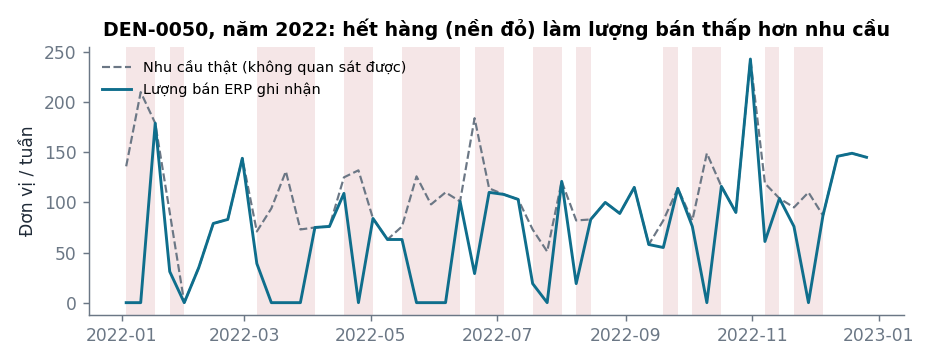
5.1. Hiệu chỉnh: giả lập phải "khó vừa đủ"
Phiên bản đầu của bộ sinh quá nhiễu: một oracle biết đúng mức kỳ vọng μ chỉ hơn baseline Croston 1,4% RMSSE. Mọi mô hình đều chạm trần, và không thí nghiệm nào phân biệt được mô hình tốt với mô hình kém. Phiên bản sau giảm phân tán của mã bán đều, tăng biên độ mùa vụ và độ phân tán xu hướng, và tăng đệm đặt hàng để hết hàng về mức thực tế.
| Chỉ tiêu | Khoảng mục tiêu | Đạt |
|---|---|---|
| Tuần-SKU có nhu cầu bằng 0 | 35–55% | 44,4% |
| Nhu cầu bị mất do hết hàng | 5–10% | 6,7% |
| Tỷ lệ mã tạo 80% doanh thu | 15–25% | 20% |
| Tỷ trọng đơn dự án trong tổng lượng | 10–25% | 15,5% |
| Mức cải thiện tối đa của mô hình so với baseline | ≥ 5% | 5,3–7,5% |
Cùng SEED cho cùng md5 của sales_order_line.parquet. Tồn cuối ngày dựng từ giao dịch không bao giờ âm (có assert trong bộ sinh). Bộ sinh chạy trong khoảng 5 giây.
Hàm hash() của Python bị ngẫu nhiên hóa giữa các phiên. Dùng nó để sinh số giả ngẫu nhiên thì dữ liệu đổi sau mỗi lần chạy, dù seed giữ nguyên.
Chương 6Hợp đồng dữ liệu và làm sạch
Đo trước, sửa sau. Mọi bước sửa đều ghi lại số dòng bị ảnh hưởng và được đo bằng đáp án.
6.1. Hợp đồng dữ liệu
Bước đầu tiên không sửa gì, chỉ đo. Mỗi kiểm tra trả về PASS, WARN hoặc FAIL. Ví dụ kiểm tra đối chiếu hai hệ thống ghi cùng một sự kiện:
# Đối chiếu đơn bán với phiếu xuất kho: lệch số lượng = dấu hiệu nhập sai.
xb = txn[txn.txn_type == "XUAT_BAN"].assign(qty_txn=lambda d: -d.qty)[["ref_id", "qty_txn"]]
sd = s.drop_duplicates()
sd = sd[sd.status == "HOAN_TAT"].assign(ref_id=lambda d: d.so_id + "#" + d.line_no.astype(str))
m = sd.merge(xb, on="ref_id", how="inner")
mismatch = m[m.qty != m.qty_txn]
check(res, "sales khớp phiếu xuất kho", len(mismatch) == 0,
f"{len(mismatch)} dòng lệch số lượng giữa đơn bán và phiếu xuất (nghi nhập sai)", warn_only=True)19 kiểm tra, 15 PASS, 4 WARN, 0 FAIL: 627 dòng trùng y hệt, 392 dòng âm, 30 dòng lệch phiếu xuất kho, thiếu tồn 3 ngày. Tồn dựng lại từ giao dịch khớp 100% tồn ERP lưu.
6.2. Thứ tự các bước làm sạch
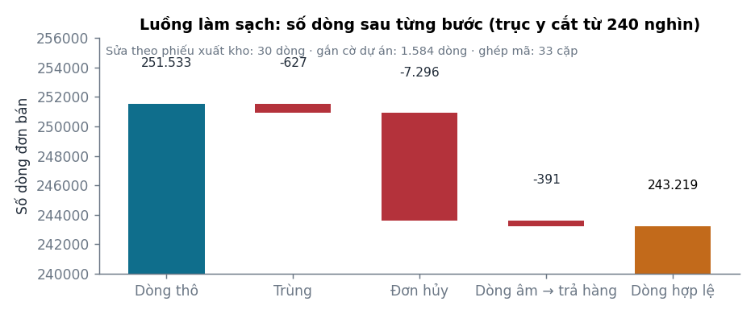
outputs/cleaning_lineage.json. Báo cáo chất lượng dữ liệu viết từ file này, không đếm tay.Thứ tự có chủ đích. Bước đối chiếu phiếu xuất kho phải đứng trước bước gắn cờ đơn dự án: một dòng gõ nhầm 10 thành 1.000 trông giống hệt một đơn dự án. Nguyên tắc chung là hệ thống gắn với hàng hóa vật lý (phiếu kho) đáng tin hơn hệ thống nhập tay (đơn bán).
6.3. Đơn dự án: robust z-score tính theo mốc cắt
Z-score thường bị chính ngoại lai kéo lệch. Robust z-score thay trung bình bằng trung vị, và độ lệch chuẩn bằng IQR chia 1,349 (với phân phối chuẩn, IQR ≈ 1,349σ):
Trung vị và IQR của mỗi dòng chỉ tính trên các dòng của cùng mã trong 365 ngày trước dòng đó (closed="left"). Như vậy ngưỡng tại năm 2024 không dùng thông tin năm 2025.
def flag_project_lines(s: pd.DataFrame, customers: pd.DataFrame) -> pd.Series:
"""Đơn dự án = cờ ERP, HOẶC khách loại dự án, HOẶC số lượng vượt xa mức thường của chính mã đó.
Mức thường tính bằng trung vị và IQR của các dòng TRONG 365 NGÀY TRƯỚC dòng đang xét
(closed='left'), nên ngưỡng tại mỗi thời điểm chỉ dùng quá khứ, tính lại được ở mọi mốc cắt.
"""
s = s.sort_values(["item_code", "order_date"])
med = pd.Series(np.nan, index=s.index)
q1, q3, cnt = med.copy(), med.copy(), med.copy()
for _, g in s.groupby("item_code", sort=False):
x = g.set_index("order_date").qty.astype(float)
roll = x.rolling("365D", closed="left")
med[g.index] = roll.median().to_numpy()
q1[g.index] = roll.quantile(.25).to_numpy()
q3[g.index] = roll.quantile(.75).to_numpy()
cnt[g.index] = roll.count().to_numpy()
sigma = np.maximum.reduce([(q3 - q1) / 1.349, .25 * med, pd.Series(1.0, index=s.index)])
z = (s.qty - med) / sigma
ctype = s.customer_key.map(customers.set_index("customer_key").customer_type)
enough = cnt >= 8
statistical = enough & (((z >= 5) & (s.qty >= 4 * med) & ctype.isin(["NHATHAU", "DUAN"])) | (z >= 10))
is_project = (s.order_type == "DU_AN") | (ctype == "DUAN") | statistical
return is_project.reindex(s.index), z.reindex(s.index)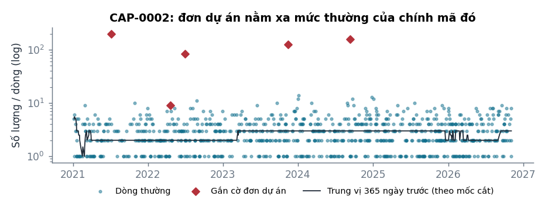
1.584 dòng được gắn cờ so với 1.409 dòng dự án thật: precision 0,857, recall 0,964, F1 0,907. Chỉ dùng cờ của ERP thì recall khoảng 0,6. Danh sách vẫn phải qua người nghiệp vụ duyệt: máy bắt rộng, người loại bớt.
6.4. Ghép mã cũ với mã thay thế
Khi hãng ra mẫu mới, mã cũ ngừng và mã mới bắt đầu. Thuật toán ưu tiên trường replaced_by của ERP, sau đó chấm điểm các mã cùng nhóm bắt đầu bán trong khoảng ±6 tuần quanh ngày mã cũ dừng:
def propose_code_mapping(s: pd.DataFrame, items: pd.DataFrame, max_gap_weeks: int = 6) -> pd.DataFrame:
"""Đề xuất cặp mã cũ -> mã mới: ưu tiên trường replaced_by của ERP, sau đó tên + thời điểm.
Điểm = 0.6 * độ giống tên (TF-IDF ký tự) + 0.4 * độ khớp thời điểm (mã cũ dừng gần lúc mã mới bắt đầu).
Kết quả là DANH SÁCH ĐỀ XUẤT để người am hiểu nghiệp vụ duyệt (TN.06), không tự động áp dụng.
"""
span = s.groupby("item_code").order_date.agg(["min", "max"])
last_data = s.order_date.max()
ended = span[span["max"] < last_data - pd.Timedelta(weeks=8)]
started = span[span["min"] > s.order_date.min() + pd.Timedelta(weeks=8)]
it = items.set_index("item_code")
rows = []
erp = it.replaced_by.dropna()
for old, new in erp.items():
rows.append((old, new, 1.0, "ERP replaced_by"))
vec = TfidfVectorizer(analyzer="char_wb", ngram_range=(3, 5)).fit(it.item_name)
for old in ended.index.difference(erp.index):
cands = started.index[(started.index != old)]
cands = [c for c in cands if it.loc[c, "category_code"] == it.loc[old, "category_code"]]
if not cands:
continue
gap = (started.loc[cands, "min"] - ended.loc[old, "max"]).dt.days / 7
ok = gap.abs() <= max_gap_weeks
cands = gap.index[ok]
if len(cands) == 0:
continue
sim = (vec.transform([it.loc[old, "item_name"]]) @ vec.transform(it.loc[cands, "item_name"]).T).toarray()[0]
score = .6 * sim + .4 * (1 - gap[ok].abs().to_numpy() / max_gap_weeks)
b = int(np.argmax(score))
rows.append((old, cands[b], float(score[b]), f"tên giống {sim[b]:.2f}, lệch {gap[ok].iloc[b]:+.0f} tuần"))
prop = pd.DataFrame(rows, columns=["old_code", "new_code", "score", "evidence"])
prop = prop.sort_values("score", ascending=False).drop_duplicates("new_code").drop_duplicates("old_code")
return prop.reset_index(drop=True)| Ngưỡng duyệt | Cặp đề xuất | Precision | Recall | F1 |
|---|---|---|---|---|
| 0,5 | 33 | 0,970 | 1,000 | 0,985 |
| 0,6 (chọn) | 33 | 0,970 | 1,000 | 0,985 |
| 0,7 | 30 | 1,000 | 0,938 | 0,968 |
Bảng 6.1. Đánh đổi precision–recall khi chọn ngưỡng duyệt, so với 32 cặp thật.
6.5. Nhu cầu bị che và cờ hết hàng
ERP ghi lượng bán, không ghi nhu cầu: bán = min(nhu cầu, tồn có sẵn). Tuần hết hàng, lượng bán chỉ là chặn dưới. Lab gắn cờ tuần có ít nhất một ngày tồn cuối ngày bằng 0, rồi loại các tuần này khỏi huấn luyện và đánh giá.
Với chuỗi ghép từ nhiều mã, chỉ coi là hết hàng khi mọi mã đang sống đều hết. "Đang sống" phải xét theo vòng đời của mã, không theo việc tuần đó có dòng bán:
# Mã "đang sống" theo vòng đời (tuần bán đầu..tuần bán cuối), KHÔNG theo việc tuần đó có bán:
# tuần hết hàng trọn tuần không có dòng bán nào nhưng mã vẫn đang sống.
life = s.groupby("item_code").week.agg(["min", "max"])
wk_cols = pd.DatetimeIndex(zero_week.columns)
active = pd.DataFrame({c: (wk_cols >= r["min"]) & (wk_cols <= r["max"]) for c, r in life.iterrows()},
index=wk_cols).T
codes_by_uid = s.groupby("uid").item_code.unique()
flags = []
for uid, codes in codes_by_uid.items():
zw = zero_week.reindex(index=list(codes)).fillna(False)
if len(codes) == 1:
f = zw.iloc[0]
else: # nhiều mã: chỉ coi là hết hàng khi mọi mã đang bán tuần đó đều hết
act = active.reindex(index=list(codes), columns=zw.columns).fillna(False).astype(bool)
f = (zw | ~act).all(axis=0) & act.any(axis=0)
flags.append(pd.DataFrame({"unique_id": uid, "week": f.index, "stockout_flag": f.to_numpy()}))Phiên bản đầu xét "đang sống" theo việc tuần đó có bán. Tuần hết hàng trọn tuần không có dòng bán nào, nên cờ không bao giờ bật ở chuỗi nhiều mã: bỏ sót một nửa số tuần hết hàng của 33 chuỗi. Lỗi này được một lượt review code độc lập tìm ra.
Cờ hết hàng: precision 0,697, recall 0,904 (trước khi sửa: 0,862). Tổng nhu cầu thường sau làm sạch lệch đáp án −0,25%; 99,75% số tuần-chuỗi khớp đúng từng đơn vị. 7,35% nhu cầu thật bị che, không khôi phục được từ ERP.
Chương 7Khai phá dữ liệu
ABC-XYZ, phân loại SBC, mùa vụ Tết, luật kết hợp và phân cụm. Mọi nhãn tính theo mốc cắt.
7.1. Nhãn theo mốc cắt
Nhãn ABC tính trên toàn kỳ 2021–2026 rồi đưa vào mô hình dự báo 2024 là rò rỉ: nhãn đó biết mã nào sẽ bán chạy năm 2025. Hàm dưới chỉ đọc các cột ≤ mốc cắt o:
def labels_at(p: Panel, o: int) -> pd.DataFrame:
"""labels(cutoff) của VT3.08: ABC, XYZ, SBC chỉ từ dữ liệu tuần <= o."""
y52 = p.Y[:, max(0, o - 51):o + 1]
r52 = np.nan_to_num(p.R[:, max(0, o - 51):o + 1]).sum(1)
order = np.argsort(-r52)
share = np.cumsum(r52[order]) / max(r52.sum(), 1e-9)
abc = np.empty(len(r52), dtype=object)
abc[order] = np.where(share <= ABC_CUTS[0], "A", np.where(share <= ABC_CUTS[1], "B", "C"))
abc[r52 <= 0] = "C"
with np.errstate(all="ignore"):
mu, sd = np.nanmean(y52, 1), np.nanstd(y52, 1)
cv = np.where(mu > 0, sd / mu, np.inf)
xyz = np.where(cv < XYZ_CUTS[0], "X", np.where(cv <= XYZ_CUTS[1], "Y", "Z"))
y104 = p.Y[:, max(0, o - 103):o + 1]
n_obs = np.sum(~np.isnan(y104), 1)
nz = np.nan_to_num(y104) > 0
k = nz.sum(1)
with np.errstate(all="ignore"):
adi = np.where(k > 0, n_obs / np.maximum(k, 1), np.inf)
sizes = np.where(nz, y104, np.nan)
m, v = np.nanmean(sizes, 1), np.nanvar(sizes, 1)
cv2 = np.where(k >= 2, v / m ** 2, 0.0)
sbc = np.where(adi < SBC_ADI, np.where(cv2 < SBC_CV2, 0, 1), np.where(cv2 < SBC_CV2, 2, 3))
return pd.DataFrame({"unique_id": p.ids, "abc": abc, "xyz": xyz, "sbc": SBC_NAMES[sbc], "adi": adi,
"cv2": cv2, "cv": cv, "revenue_52w": r52, "n_obs_104": n_obs})Ngưỡng của Syntetos, Boylan và Croston (2005): ADI 1,32 và CV² 0,49 chia nhu cầu thành đều, thất thường, lẻ tẻ, gộp cục.
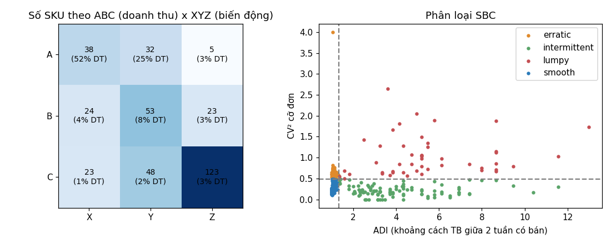
38 mã AX tạo 52,1% doanh thu; 123 mã CZ chỉ tạo 2,6%. SBC: 151 đều, 69 thất thường, 101 lẻ tẻ, 48 gộp cục. Mỗi năm 12–14% số mã đổi kiểu nhu cầu và 7–10% đổi nhóm ABC, nên nhãn phải tính lại ở mỗi mốc cắt.
7.2. Mùa vụ Tết
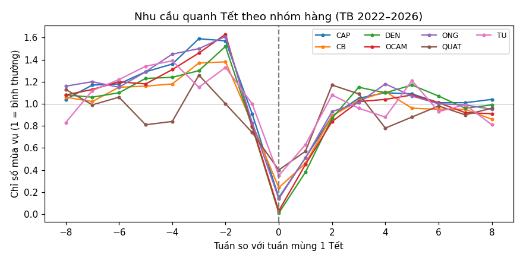
Tết dịch chuyển từ 21/1 đến 20/2 dương lịch, nên "tuần trong năm" không bắt được hiệu ứng này. Đặc trưng đúng là số tuần đến Tết. Đây cũng là lý do seasonal naive kém nhất trong các baseline (Chương 12).
7.3. Luật kết hợp và định nghĩa giỏ hàng
def association_rules(lines: pd.DataFrame, min_count: int = 30) -> pd.DataFrame:
"""Luật 2 mục A -> B trên giỏ = đơn hàng thường. support, confidence, lift như bài giảng 6."""
b = lines[~lines.is_project][["so_id", "uid"]].drop_duplicates()
n_orders = b.so_id.nunique()
multi = b[b.so_id.map(b.so_id.value_counts()) >= 2]
pairs = multi.merge(multi, on="so_id")
pairs = pairs[pairs.uid_x != pairs.uid_y]
cnt = pairs.groupby(["uid_x", "uid_y"]).size().rename("n_ab").reset_index()
cnt = cnt[cnt.n_ab >= min_count]
item_n = b.uid.value_counts()
cnt["support"] = cnt.n_ab / n_orders
cnt["confidence"] = cnt.n_ab / cnt.uid_x.map(item_n)
cnt["lift"] = cnt.confidence / (cnt.uid_y.map(item_n) / n_orders)
return cnt.sort_values("lift", ascending=False).rename(columns={"uid_x": "A", "uid_y": "B"})| Định nghĩa giỏ | Cặp lift ≥ 3 | Cặp thật tìm được | Precision |
|---|---|---|---|
| Mọi khách | 227 | 14 / 25 | 6,2% |
| Bỏ mã "khách lẻ" (13,9% số dòng) | 19 | 13 / 25 | 68,4% |
Bảng 7.1. Một thao tác định nghĩa lại giỏ hàng làm độ chính xác tăng hơn mười lần.
7.4. Phân cụm SKU
K-means trên sáu đặc trưng hình dạng chuỗi (log trung bình, ADI, CV², tỷ lệ tuần bằng 0, xu hướng, tỷ trọng dự án), chọn k bằng silhouette. k = 2 tốt nhất (silhouette 0,375), tách mã bán đều lượng lớn khỏi mã lẻ tẻ. ARI giữa cụm và SBC là 0,488; giữa SBC và kiểu nhu cầu thật là 0,661. Cụm không mang thêm thông tin so với SBC. Kết quả âm tính cũng là kết quả.
7.5. Biến ngoài: tương quan không phải dự báo
Tăng trưởng so cùng kỳ của nhu cầu tháng tương quan 0,41–0,61 với chỉ số xây dựng ở sáu nhóm hàng. Nhưng cả hai cùng chịu đợt suy giảm 2023 và phục hồi 2024; cần sai phân, kiểm định tính dừng, kiểm định Granger và hiệu chỉnh kiểm định nhiều lần trước khi kết luận. Phép thử quyết định là ablation ở Chương 12.
Chương 8Mốc cắt và đặc trưng as-of
Quy tắc vàng: tại mốc cắt o, chỉ được đọc những gì đã biết vào sáng thứ Hai sau tuần o.
published_at, không theo ref_period.def as_of(df: pd.DataFrame, t, value_col: str = "value") -> pd.DataFrame:
"""Chỉ trả về các dòng đã được CÔNG BỐ tại thời điểm t (VT1.06, chống rò rỉ).
Lọc theo published_at chứ không theo ref_period: số liệu tháng 10 công bố ngày 6/11
thì tại ngày 1/11 chưa được phép dùng.
"""
return df[df["published_at"] <= pd.Timestamp(t)]8.1. Bảng đặc trưng
| Nhóm | Đặc trưng | Ghi chú |
|---|---|---|
| BASE | h; lag 0–3, 12; slag = y[o+h−52]; trung bình trượt 4, 13, 26, 52; độ lệch chuẩn 13; tỷ lệ tuần bằng 0; số tuần từ lần bán cuối; số tuần đến Tết, tuần trong năm, cờ COVID của tuần mục tiêu; nhóm hàng | Mọi đặc trưng mức chia cho thang đo của chuỗi |
| DM | ABC, XYZ, SBC, ADI, CV² tại mốc cắt; tỷ lệ tuần hết hàng 13 tuần; cờ VAT 8% | Để kiểm RQ4 |
| EXT | Biến động giá đồng 4 và 13 tuần, tỷ giá 13 tuần, chỉ số xây dựng | Để kiểm RQ2 |
Mỗi mốc cắt sinh một dòng cho mỗi tầm nhìn h (chiến lược dự báo trực tiếp, h là một đặc trưng):
for h in hs:
tw = p.weeks[o] + pd.Timedelta(weeks=h)
f = pd.DataFrame(common)
f["h"] = h
f["origin"] = o
f["ds"] = tw
f["slag"] = p.Y[:, o + h - 52] / scale if o + h - 52 >= 0 else np.nan
f["t_wtt"] = int(weeks_to_tet(pd.DatetimeIndex([tw]))[0])
f["t_woy"] = int(tw.isocalendar().week)
f["t_covid"] = int(in_periods(pd.DatetimeIndex([tw]), [COVID_2021])[0])
f["t_vat8"] = int(in_periods(pd.DatetimeIndex([tw]), VAT8_PERIODS)[0])
if o + h < p.T:
f["y"] = p.Y[:, o + h]
f["stockout"] = p.SO[:, o + h]
else:
f["y"], f["stockout"] = np.nan, False
frames.append(f)8.2. Chứng minh không rò rỉ bằng test
Một tuyên bố "không rò rỉ" chỉ đáng tin khi có test. Test dưới thay toàn bộ dữ liệu sau mốc cắt bằng số ngẫu nhiên, rồi kiểm tra đặc trưng, nhãn và dự báo baseline tại mốc cắt không đổi:
@pytest.fixture(scope="module")
def panels():
from src.panel import Panel
p = Panel(pd.read_parquet(DW))
q = Panel(pd.read_parquet(DW))
o = p.idx("2023-12-25")
q.Y, q.R, q.SO = q.Y.copy(), q.R.copy(), q.SO.copy() # pandas 3 trả mảng chỉ đọc
rng = np.random.default_rng(0)
future = q.Y[:, o + 1:]
q.Y[:, o + 1:] = np.where(np.isnan(future), np.nan, rng.integers(0, 1000, future.shape))
q.R[:, o + 1:] = q.R[:, o + 1:] * 50
q.SO[:, o + 1:] = ~q.SO[:, o + 1:]
return p, q, odef test_features_ignore_future(panels):
from src.panel import features_at, labels_at
p, q, o = panels
a = features_at(p, o, [1, 4, 12], labels_at(p, o)).drop(columns=["y", "stockout"])
b = features_at(q, o, [1, 4, 12], labels_at(q, o)).drop(columns=["y", "stockout"])
pd.testing.assert_frame_equal(a, b)Chương 9Baseline và mô hình toàn cục
Mô hình phức tạp chỉ có giá trị khi thắng được các mô hình đơn giản.
9.1. Baseline cho nhu cầu lẻ tẻ
Toàn bộ baseline chạy đồng thời trên 400 chuỗi trong một vòng lặp qua thời gian; mỗi phép tính là một vector:
def _recursions(Y: np.ndarray):
"""Chạy một lượt qua lịch sử, cập nhật SES (nhiều alpha), Croston và TSB cùng lúc."""
n, t_len = Y.shape
lvl = np.full((len(ALPHAS), n), np.nan)
sse = np.zeros((len(ALPHAS), n))
a = .1
z = np.full(n, np.nan) # Croston: cỡ đơn khi có bán
q = np.full(n, np.nan) # Croston: khoảng cách giữa hai lần có bán
gap = np.ones(n)
pz = np.full(n, np.nan) # TSB: xác suất có bán
zz = np.full(n, np.nan) # TSB: cỡ đơn
for t in range(t_len):
y = Y[:, t]
obs = ~np.isnan(y)
err = np.where(obs & ~np.isnan(lvl), y - lvl, 0.0)
sse += err ** 2
init = obs & np.isnan(lvl)
lvl = np.where(init, y, np.where(obs, lvl + ALPHAS[:, None] * err, lvl))
pos = obs & (y > 0)
first = pos & np.isnan(z)
upd = pos & ~first
z = np.where(first, y, np.where(upd, z + a * (y - z), z))
q = np.where(first, gap, np.where(upd, q + a * (gap - q), q))
gap = np.where(pos, 1, np.where(obs, gap + 1, gap))
start = obs & np.isnan(pz)
pz = np.where(start, (y > 0).astype(float), np.where(obs, pz + a * ((y > 0) - pz), pz))
zz = np.where(pos & np.isnan(zz), y, np.where(pos, zz + a * (y - zz), zz))
best = np.argmin(np.where(np.isnan(lvl), np.inf, sse), axis=0)
ses = lvl[best, np.arange(n)]
croston = (1 - a / 2) * z / q
tsb = pz * zz
return ses, np.nan_to_num(croston), np.nan_to_num(tsb)Chuỗi 4, 0, 4, 0, … bán trung bình 2 cái/tuần. Chứng minh Croston-SBA hội tụ về (1 − 0,05) × 4/2 = 1,9 và TSB về khoảng 2,0, rồi so với test test_croston_on_regular_intermittent_series.
9.2. Gradient boosting toàn cục
Cây quyết định ở bài giảng 3 chia không gian đặc trưng thành vùng. Gradient boosting xây M cây nông nối tiếp, cây thứ m học gradient của hàm mất mát tại dự báo hiện tại:
Một mô hình cho mọi SKU học chung mẫu Tết, xu hướng và hành vi lẻ tẻ. Mục tiêu chia cho thang đo của chuỗi để mã bán 2 cái và mã bán 500 cái/tuần học chung được. Bản trung bình dùng mất mát Poisson; mỗi quantile một mô hình với mất mát pinball:
def fit(train: pd.DataFrame, features: list[str], quantiles) -> dict:
X = train[features]
y = train.y.to_numpy() / train.scale.to_numpy()
models = {"mean": HistGradientBoostingRegressor(loss="poisson", **PARAMS).fit(X, y)}
for q in quantiles:
models[q] = HistGradientBoostingRegressor(loss="quantile", quantile=q, **PARAMS).fit(X, y)
return modelsdef predict(models: dict, df: pd.DataFrame, features: list[str], quantiles) -> pd.DataFrame:
X = df[features]
s = df.scale.to_numpy()
out = pd.DataFrame({"mean": np.maximum(models["mean"].predict(X), 0) * s}, index=df.index)
qs = np.column_stack([np.maximum(models[q].predict(X), 0) * s for q in quantiles])
qs = np.sort(qs, axis=1)
for j, q in enumerate(quantiles):
out[f"q{int(round(q * 100))}"] = qs[:, j]
return out| Ý nghĩa | Lab (scikit-learn) | LightGBM |
|---|---|---|
| Số cây, hệ số học | max_iter=250, learning_rate=0.05 | n_estimators=250, learning_rate=0.05 |
| Độ phức tạp, mẫu ở lá | max_leaf_nodes=31, min_samples_leaf=200 | num_leaves=31, min_data_in_leaf=200 |
| Dữ liệu đếm | loss="poisson" | objective="tweedie" |
| Quantile | loss="quantile", quantile=q | objective="quantile", alpha=q |
Bảng 9.1. Ánh xạ tham số khi chuyển sang LightGBM trong dự án thật.
Chương 10Quantile và hiệu chỉnh conformal
Đặt hàng là bài toán newsvendor: lượng đặt tối ưu là một quantile của phân phối nhu cầu.
Với cu là chi phí thiếu một đơn vị và co là chi phí thừa. Mức phục vụ 98% tương đương nói thiếu hàng đắt gấp khoảng 49 lần tồn thừa. Quantile được học bằng hàm pinball:
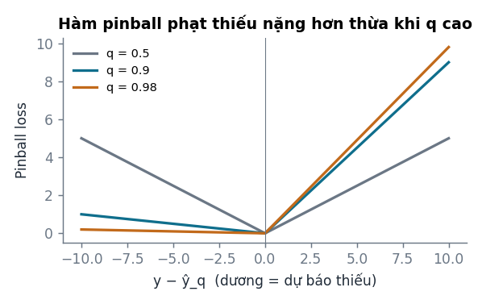
def pinball(y, q_pred, q: float):
"""Pinball loss của quantile q: max(q*(y-f), (q-1)*(y-f)). Trung bình theo phần tử."""
d = np.asarray(y, float) - np.asarray(q_pred, float)
return np.maximum(q * d, (q - 1) * d)10.1. Split conformal cho baseline
Baseline chỉ cho dự báo điểm. Split conformal biến dự báo điểm thành khoảng mà không cần giả định phân phối: lấy phần dư chuẩn hóa trên 52 tuần ngay trước mốc huấn luyện, nhóm theo (mô hình, SBC, nhóm tầm nhìn), và cộng quantile của phần dư vào dự báo điểm.
def fit_conformal(calib: pd.DataFrame, quantiles) -> pd.DataFrame:
"""Quantile của phần dư chuẩn hóa (y - f) / scale theo (model, sbc, nhóm tầm nhìn)."""
c = calib.assign(e=(calib.y - calib["mean"]) / calib.scale, hb=hbucket(calib.h))
out = c.groupby(["model", "sbc", "hb"]).e.quantile(quantiles).unstack()
out.columns = [f"q{int(round(q * 100))}" for q in quantiles]
return out.reset_index()def apply_conformal(fc: pd.DataFrame, table: pd.DataFrame, quantiles) -> pd.DataFrame:
fc = fc.assign(hb=hbucket(fc.h)).merge(table, on=["model", "sbc", "hb"], how="left")
cols = [f"q{int(round(q * 100))}" for q in quantiles]
for c in cols:
fc[c] = np.maximum(fc["mean"] + fc[c].fillna(0) * fc.scale, 0)
fc[cols] = np.sort(fc[cols].to_numpy(), axis=1) # quantile không được bắt chéo
return fc.drop(columns="hb")10.2. Conformalized quantile regression
Quantile cao của cây boosting thường thiếu độ phủ ở đuôi, vì đuôi có ít dữ liệu. CQR (Romano, Patterson, Candès 2019) huấn luyện mô hình quantile trên giai đoạn kết thúc trước 52 tuần cuối, đo điểm s = (y − q̂(x)) / scale trên 52 tuần cuối, rồi cộng quantile mức ⌈(n+1)α⌉/n của s theo nhóm ABC.
def train_cum_gbm(p: Panel, te: int, H: np.ndarray, abc: np.ndarray, conformal: bool = True, alphas=None):
"""GBM quantile trên tổng nhu cầu L+R, có hiệu chỉnh conformal (CQR) theo nhóm ABC.
Quantile cao (0.98) của cây boosting thường THIẾU độ phủ ở đuôi. CQR: huấn luyện trên
cửa sổ kết thúc trước (te - 52), đo phần dư chuẩn hóa s = (y - q_hat) / scale trên 52 tuần
cuối, rồi cộng thêm quantile mức alpha của s (hiệu chỉnh mẫu hữu hạn (n+1)alpha/n).
"""
alphas = sorted(set(alphas)) if alphas is not None else ALPHA_GRID # triển khai chỉ cần các alpha đã chọn
cal_start = te - 52 if conformal else te
tr_rows, cal_rows = [], []
for o in range(30, te - int(H.min()), 2):
f = cum_features(p, o, H)
y, so = cumulative_target(p, o, H)
ok = f.active.to_numpy() & ~so & ~np.isnan(y) & (f.n_obs.to_numpy() >= 13)
tr_rows.append(f[ok & (o + H <= cal_start)].assign(ycum=y[ok & (o + H <= cal_start)]))
cal = ok & (o >= cal_start) & (o + H <= te)
cal_rows.append(f[cal].assign(ycum=y[cal], abc_grp=abc[cal])) # nhãn nhóm riêng, không ghi đè đặc trưng
tr = pd.concat(tr_rows, ignore_index=True)
models = {a: HistGradientBoostingRegressor(loss="quantile", quantile=a, **PARAMS)
.fit(tr[CUM_FEATURES], tr.ycum / tr.scale) for a in alphas}
adj = {}
if conformal:
cal = pd.concat(cal_rows, ignore_index=True)
for a in alphas:
s = cal.ycum / cal.scale - models[a].predict(cal[CUM_FEATURES])
for g, sg in s.groupby(cal.abc_grp):
n = len(sg)
adj[(g, a)] = float(np.quantile(sg, min(1.0, np.ceil((n + 1) * a) / n)))
return models, adjPhiên bản đầu ghi đè cột đặc trưng abc tại các mốc hiệu chỉnh bằng nhãn ABC tại mốc huấn luyện, để dùng làm nhóm. Đặc trưng khi hiệu chỉnh khác đặc trưng khi dự báo thật, và một phần là thông tin tương lai. Sửa bằng một cột nhóm riêng (abc_grp).
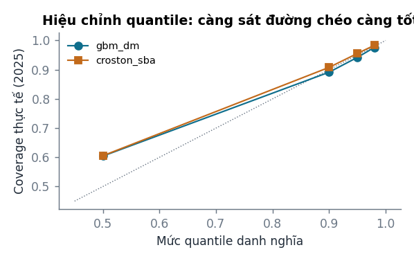
Chương 11Deep learning và foundation model
Nội dung môn Trí tuệ nhân tạo (Chương 1–6) áp vào cùng bài toán, chấm trên cùng khung backtest, chỉ số và quality gate với GBM.
| Chương của môn AI | Nội dung | Trong lab |
|---|---|---|
| 2 – ANN | MLP, ReLU, lan truyền ngược | MLPNet |
| 3 – Training DNN | Dataset/DataLoader, vòng huấn luyện, validation, BatchNorm, Dropout | build_windows, train_model |
| 4 – Fine-tune, thuật toán huấn luyện | AdamW, scheduler, early stopping, gradient clipping, đóng băng lớp, Hugging Face | train_model, finetune_head, Chronos-2 |
| 5 – CNN | Tích chập, kernel, padding | CNN1DNet (tích chập 1 chiều giãn) |
| 6 – RNN | LSTM, GRU, chuỗi thời gian | RNNNet |
11.1. Mẫu dữ liệu và cách chia validation
Mỗi mẫu là một cặp (chuỗi, mốc cắt o): cửa sổ 52 tuần × 4 kênh (y/scale, có quan sát, cờ hết hàng, số tuần đến Tết), lịch của 12 tuần mục tiêu, nhóm hàng, và mục tiêu 12 tuần có mặt nạ. Khác biệt quan trọng nhất so với ví dụ CIFAR-10 của môn: validation là 26 tuần mốc cắt cuối của giai đoạn huấn luyện, không phải mẫu ngẫu nhiên. shuffle=True chỉ trộn bên trong tập huấn luyện.
Test test_windows_ignore_future thay dữ liệu sau mốc cắt bằng số ngẫu nhiên; cửa sổ, biến tương lai, thang đo và mặt nạ không đổi.
11.2. Một đầu ra chung cho mọi kiến trúc
Đầu ra sinh 12 × 5 giá trị: trung bình qua softplus, và bốn quantile dựng bằng cộng dồn softplus, nên luôn không âm và không bắt chéo. Hàm mất mát là Poisson NLL cho trung bình cộng pinball cho quantile, chỉ tính trên ô có mặt nạ bằng 1:
class Head(nn.Module):
"""Đầu ra chung: biểu diễn của encoder + biến tương lai + nhúng nhóm hàng -> (mean, quantile)."""
def __init__(self, d_enc: int, n_cat: int, hidden: int = 128, dropout: float = .2):
super().__init__()
self.emb = nn.Embedding(n_cat, 8)
self.net = nn.Sequential(nn.Linear(d_enc + H * N_FUT + 8, hidden), nn.ReLU(), nn.Dropout(dropout),
nn.Linear(hidden, H * (1 + len(QS))))
def forward(self, z, fut, cat):
raw = self.net(torch.cat([z, fut.flatten(1), self.emb(cat)], 1)).view(-1, H, 1 + len(QS))
mean = F.softplus(raw[..., 0])
q = torch.cumsum(F.softplus(raw[..., 1:]), dim=-1) # q50 <= q90 <= q95 <= q98, đều >= 0
return mean, qclass RNNNet(nn.Module):
"""Chương 6: encoder LSTM hoặc GRU 2 lớp; trạng thái ẩn cuối cùng tóm tắt 52 tuần lịch sử."""
def __init__(self, n_cat, cell="lstm", hidden=64, dropout=.2):
super().__init__()
rnn = nn.LSTM if cell == "lstm" else nn.GRU
self.enc = rnn(N_IN, hidden, num_layers=2, batch_first=True, dropout=dropout)
self.head = Head(hidden, n_cat)
def forward(self, x, fut, cat):
out, _ = self.enc(x)
return self.head(out[:, -1], fut, cat)class CNN1DNet(nn.Module):
"""Chương 5: tích chập 1 chiều theo thời gian, giãn 1-2-4-8 để nhìn được cả mùa vụ dài."""
def __init__(self, n_cat, ch=32, dropout=.2):
super().__init__()
layers, c_in = [], N_IN
for d in (1, 2, 4, 8):
layers += [nn.Conv1d(c_in, ch, kernel_size=3, dilation=d, padding="same"), nn.BatchNorm1d(ch), nn.ReLU()]
c_in = ch
self.conv = nn.Sequential(*layers)
self.drop = nn.Dropout(dropout)
self.head = Head(2 * ch, n_cat)
def forward(self, x, fut, cat):
h = self.conv(x.transpose(1, 2)) # (B, ch, L)
z = torch.cat([h.mean(-1), h[:, :, -1]], 1) # gộp trung bình + bước cuối
return self.head(self.drop(z), fut, cat)Tích chập giãn 1-2-4-8 với kernel 3 cho vùng nhìn 31 tuần. LSTM và GRU đọc tuần tự 52 bước; các cổng của chúng tránh hiện tượng mất gradient của RNN đơn giản.
11.3. Vòng huấn luyện
Sáu bước của Chương 3 (zero_grad, forward, loss, backward, step, validation) cộng bốn kỹ thuật của Chương 4: AdamW, ReduceLROnPlateau, gradient clipping và early stopping giữ trạng thái có validation loss thấp nhất.
def train_model(model, train_ds, val_ds, epochs=40, lr=1e-3, weight_decay=1e-4, patience=5, clip=1.0,
batch_size=512, params=None, seed=0, log=None):
"""Vòng huấn luyện của Chương 3–4: AdamW, ReduceLROnPlateau, gradient clipping, early stopping.
Trả về mô hình ở epoch có validation loss thấp nhất và lịch sử (epoch, train, val, lr).
"""
torch.manual_seed(seed)
g = torch.Generator().manual_seed(seed)
tl = DataLoader(train_ds, batch_size=batch_size, shuffle=True, generator=g, drop_last=True) # BatchNorm cần batch > 1
vl = DataLoader(val_ds, batch_size=2048)
opt = torch.optim.AdamW(params if params is not None else model.parameters(), lr=lr, weight_decay=weight_decay)
sched = torch.optim.lr_scheduler.ReduceLROnPlateau(opt, mode="min", factor=.5, patience=2)
best, best_state, bad, hist = np.inf, copy.deepcopy(model.state_dict()), 0, []
for ep in range(1, epochs + 1):
model.train()
tot, n = 0.0, 0
for x, fut, cat, y, m in tl:
opt.zero_grad()
mean, q = model(x, fut, cat)
loss = loss_fn(mean, q, y, m)
loss.backward()
nn.utils.clip_grad_norm_(model.parameters(), clip) # chống bùng nổ gradient (RNN)
opt.step()
tot += loss.item() * len(x)
n += len(x)
val = evaluate_loss(model, vl)
sched.step(val)
hist.append({"epoch": ep, "train_loss": tot / n, "val_loss": val, "lr": opt.param_groups[0]["lr"]})
if log:
log(f" epoch {ep:2d} train {tot / n:.4f} val {val:.4f} lr {opt.param_groups[0]['lr']:.1e}")
if val < best - 1e-4:
best, best_state, bad = val, copy.deepcopy(model.state_dict()), 0
else:
bad += 1
if bad >= patience: # early stopping
break
model.load_state_dict(best_state)
return model, hist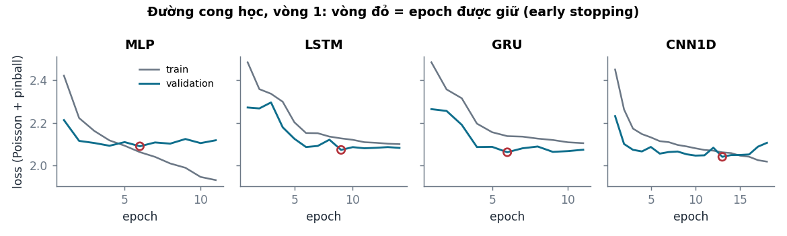
11.4. Fine-tune theo nhóm hàng
Theo Chương 4: sao chép LSTM đã huấn luyện cho mọi SKU, đóng băng encoder, học lại đầu ra cho từng nhóm hàng.
def finetune_head(base, train_ds, val_ds, epochs=15, lr=3e-4, seed=0):
"""Chương 4: fine-tune — sao chép mô hình đã huấn luyện, ĐÓNG BĂNG encoder, chỉ học lại đầu ra."""
model = copy.deepcopy(base)
for prm in model.enc.parameters():
prm.requires_grad = False
head_params = [prm for prm in model.head.parameters()]
return train_model(model, train_ds, val_ds, epochs=epochs, lr=lr, patience=3, params=head_params, seed=seed)Fine-tune không cải thiện (RMSSE 0,779 so với 0,777 ở vòng 1; 0,766 so với 0,767 ở vòng 2). Mô hình toàn cục đã có nhúng nhóm hàng, và mỗi nhóm ít mẫu hơn nhiều. Fine-tune có giá trị khi chuyển từ dữ liệu lớn và khác sang dữ liệu nhỏ: đó chính là ý tưởng của foundation model.
11.5. Chronos-2 zero-shot
Chronos-2 (khoảng 120 triệu tham số, tải từ Hugging Face) được huấn luyện trước trên rất nhiều chuỗi thời gian và dùng ở đây không qua huấn luyện thêm. Bản chronos2_cov nhận thêm số tuần đến Tết làm biến đồng biến quá khứ và tương lai. Dự báo 364 chuỗi × 13 mốc cắt mất khoảng 20 giây trên CPU.
def chronos_forecast(p, origins, series_mask, with_cov: bool, pipe) -> pd.DataFrame:
"""Chronos-2 zero-shot tại từng mốc cắt; ngữ cảnh = toàn bộ lịch sử đã quan sát đến o."""
wtt_all = weeks_to_tet(pd.date_range(p.weeks[0], periods=p.T + D.H, freq="W-MON")).astype(float)
first = p.first_obs()
rows = []
for o in origins:
idx = np.where(series_mask & ~np.isnan(p.Y[:, o]))[0]
inputs = []
for i in idx:
y = p.Y[i, first[i]:o + 1]
item = {"target": np.nan_to_num(y)}
if with_cov:
item["past_covariates"] = {"wtt": wtt_all[first[i]:o + 1]}
item["future_covariates"] = {"wtt": wtt_all[o + 1:o + 1 + D.H]}
inputs.append(item)
q, mean = pipe.predict_quantiles(inputs, prediction_length=D.H, quantile_levels=list(C.QUANTILES),
batch_size=256)
qa = np.clip(np.stack([t[0].numpy() for t in q]), 0, None)
qa = np.sort(qa, axis=-1)
ma = np.clip(np.stack([t[0].numpy() for t in mean]), 0, None)
w = {"sid": idx, "origin": np.full(len(idx), o)}
rows.append(to_long(p, w, ma, qa, "chronos2_cov" if with_cov else "chronos2"))
return pd.concat(rows, ignore_index=True)11.6. Kết quả
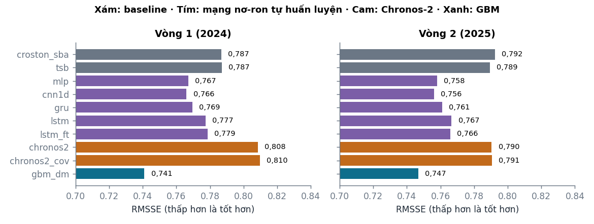
| Mô hình | RMSSE 2024 | RMSSE 2025 | SPL 2025 | WAPE 2025 | Bias 2025 | Gate |
|---|---|---|---|---|---|---|
| gbm_dm | 0,741 | 0,747 | 0,221 | 0,390 | −2,2% | Đạt |
| cnn1d | 0,766 | 0,756 | 0,226 | 0,395 | −4,6% | Trượt G1 |
| mlp | 0,767 | 0,758 | 0,232 | 0,397 | −2,6% | Trượt G1 |
| gru | 0,769 | 0,761 | 0,227 | 0,404 | −2,0% | Trượt G1 |
| lstm | 0,777 | 0,767 | 0,229 | 0,411 | −3,2% | Trượt G1 |
| lstm_ft | 0,779 | 0,766 | 0,229 | 0,409 | −2,4% | Trượt G1 |
| chronos2 | 0,808 | 0,790 | 0,230 | 0,375 | −14,2% | Trượt G1, G5 |
| tsb (baseline tốt nhất 2025) | 0,787 | 0,789 | 0,244 | 0,421 | −4,6% |
Bảng 11.1. Chỉ chấm trên hai vòng backtest; tập test 2026 đã khóa cho mô hình chốt trước đó.
Bốn kiến trúc mạng nơ-ron tốt hơn baseline mạnh nhất 1–4% RMSSE nhưng kém GBM 1–5% và không đạt tiêu chí "tốt hơn baseline ít nhất 5%"; CNN 1D tốt nhất trong nhóm. Chronos-2 zero-shot, không cần huấn luyện, có WAPE tốt nhất mọi mô hình (0,375) nhưng dự báo thiếu 14%: dự báo của nó gần trung vị, tối ưu sai số tuyệt đối chứ không tối ưu sai số bình phương. Với khoảng 400 chuỗi tuần, GBM vẫn là lựa chọn tốt nhất, và đã sát trần dự báo được.
(1) Bỏ early stopping của MLP và đo lại RMSSE. (2) Đổi scheduler thành OneCycleLR. (3) Bỏ gradient clipping khi huấn luyện LSTM với lr 1e-2. (4) Đổi giãn CNN thành 1-1-1-1. (5) Thay đầu ra trực tiếp của LSTM bằng decoder sinh lần lượt 12 tuần. (6) Kết hợp 0,5 × gbm_dm + 0,5 × cnn1d và chạy quality gate.
Chương 12Backtest, chỉ số và quality gate
Chia theo thời gian, chấm bằng chỉ số hợp với dữ liệu nhiều số 0, và viết tiêu chí nghiệm thu trước khi nhìn kết quả.
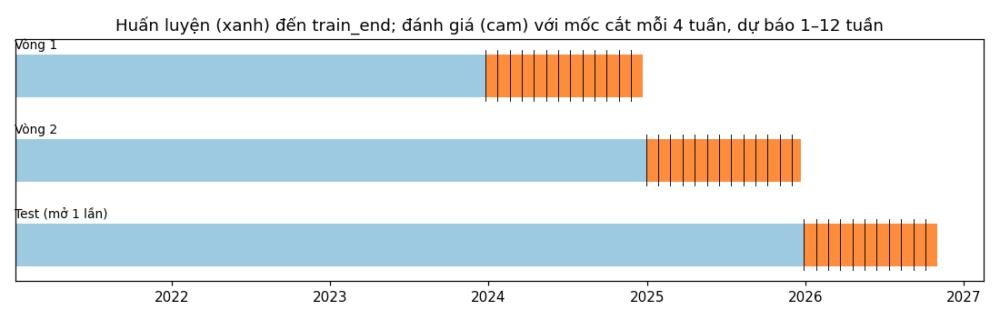
12.1. Chỉ số
RMSSE bằng 1 nghĩa là sai ngang dự báo naive một bước trên lịch sử. Thang đo chỉ tính trên lịch sử trước mốc huấn luyện. SPL là pinball trung bình trên bốn quantile, chuẩn hóa theo cùng cách. Tuần hết hàng bị loại khỏi mọi phép tính.
def history_scales(Y_hist: np.ndarray):
"""Thang đo theo từng chuỗi từ lịch sử (n x t, NaN = chưa hoạt động).
trả về (scale_sq cho RMSSE, scale_abs cho pinball chuẩn hóa).
"""
d = np.diff(Y_hist, axis=1)
with np.errstate(all="ignore"):
sq = np.nanmean(d ** 2, axis=1)
ab = np.nanmean(np.abs(d), axis=1)
return sq, abLịch sử 0, 2, 0, 2, 0 cho scalesq = 4. Bốn tuần đánh giá y = 3, 1, 0, 4 với ŷ = 1, 3, 1, 2: RMSSE = √(13/4/4) = 0,90; WAPE = 7/8 = 0,875; Bias = −12,5%.
12.2. Quality gate
Sáu tiêu chí được viết trong code trước khi chạy mô hình: RMSSE tốt hơn baseline tốt nhất ít nhất 5% (G1); pinball chuẩn hóa tốt hơn (G2); coverage P90 trong [0,86; 0,94] (G3) và P95 trong [0,91; 0,98] (G4); |Bias| ≤ 5% (G5); không nhóm ABC nào kém baseline quá 5% (G6). Phải đạt ở cả hai vòng.
def quality_gate(overall: pd.DataFrame, by_abc: pd.DataFrame, candidate: str) -> dict:
base = overall[overall.model.isin(BASELINE_MODELS)].sort_values("RMSSE").iloc[0]
m = overall.set_index("model").loc[candidate]
res = {k: bool(f(m, base)) for k, f in GATES.items()}
ab = by_abc.pivot(index="seg_abc", columns="model", values="RMSSE")
worse = (ab[candidate] / ab[base.model] - 1).round(3).to_dict()
res["G6 Không nhóm ABC nào kém baseline > 5%"] = bool(max(worse.values()) <= .05)
return {"candidate": candidate, "best_baseline": base.model, "gates": res,
"rmsse_change_by_abc": worse, "passed": all(res.values())}Trên phiên bản dữ liệu đầu, oracle biết đúng mức kỳ vọng đạt RMSSE 0,758, mô hình tốt nhất 0,755: đã chạm trần, G1 không thể đạt. Với dữ liệu thật, ước lượng sàn bằng √(mean μ / scalesq) khi nhu cầu xấp xỉ Poisson, trước khi cam kết với doanh nghiệp.
12.3. Kết quả
| Mô hình | RMSSE 2024 | RMSSE 2025 | SPL 2025 | Bias 2025 | Cov P90 2025 |
|---|---|---|---|---|---|
| gbm_dm | 0,741 | 0,747 | 0,221 | −2,2% | 0,891 |
| gbm_base | 0,741 | 0,749 | 0,224 | −2,5% | 0,892 |
| gbm_dm_ext | 0,745 | 0,749 | 0,221 | −2,6% | 0,892 |
| tsb | 0,787 | 0,789 | 0,244 | −4,6% | 0,907 |
| croston_sba | 0,787 | 0,792 | 0,242 | −8,6% | 0,908 |
| ses | 0,809 | 0,794 | 0,245 | −4,7% | 0,907 |
| snaive | 1,071 | 1,074 | 0,297 | −10,8% | 0,910 |
Bảng 12.1. Kết quả hai vòng backtest (350 và 364 chuỗi). gbm_dm qua cả sáu gate ở cả hai vòng: RMSSE tốt hơn baseline tốt nhất 5,8% và 5,3%, SPL tốt hơn 9,1% và 9,4%.
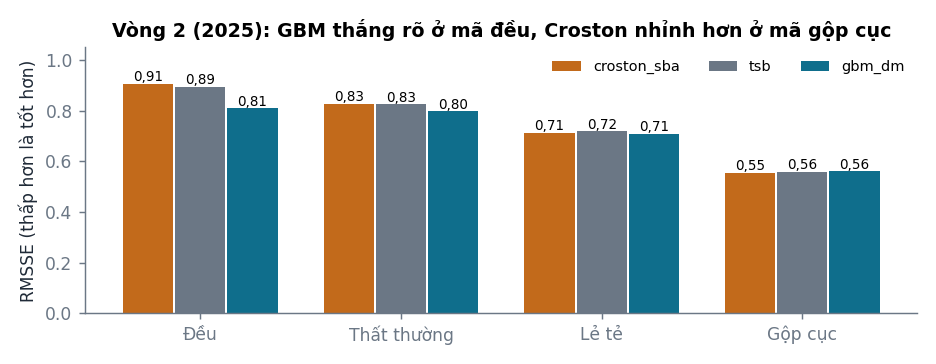
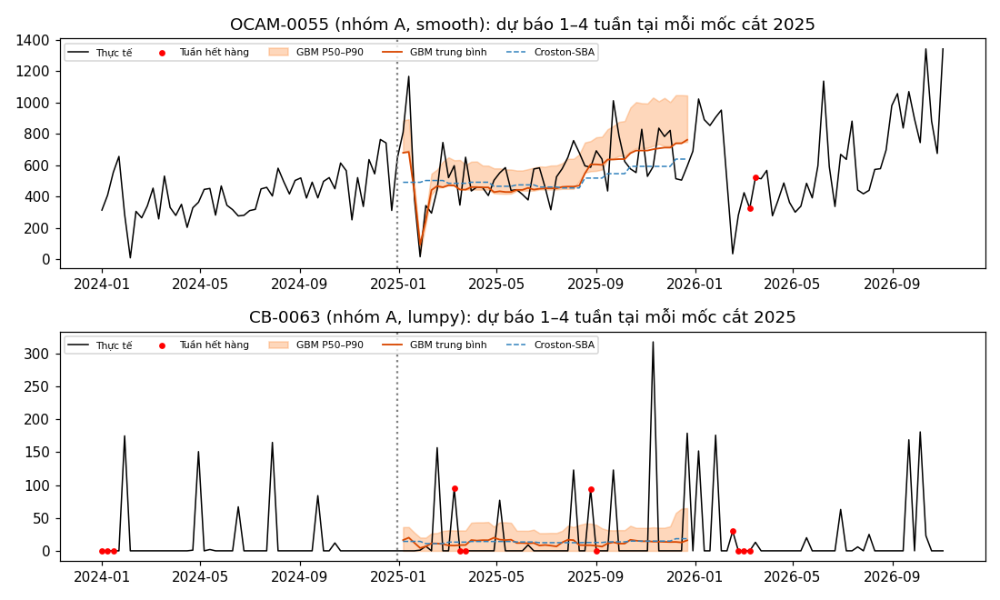
Quanh Tết (±2 tuần), GBM đạt RMSSE 0,599 so với 0,842 của Croston, vốn dự báo thừa 43% đúng lúc kho cần tồn thấp nhất. Bootstrap theo cặp trên SKU: chênh lệch RMSSE −0,046, khoảng tin cậy 95% [−0,054; −0,037], 74% số SKU tốt hơn.
12.4. Ablation: trả lời RQ4 và RQ2
| So sánh | ΔRMSSE 2024 (KTC 95%) | ΔRMSSE 2025 (KTC 95%) | Kết luận |
|---|---|---|---|
| + nhãn khai phá (RQ4) | −0,0002 [−0,0023; +0,0017] | −0,0025 [−0,0041; −0,0009] | Không nhất quán, rất nhỏ |
| + biến ngoài (RQ2) | +0,0039 [+0,0019; +0,0059] | +0,0020 [+0,0012; +0,0028] | Làm kém đi |
Giá trị của khai phá dữ liệu nằm ở làm sạch (đơn dự án, ghép mã, cờ hết hàng) và ở phân khúc để đánh giá và đặt mức phục vụ, không nằm ở việc thêm nhãn làm đặc trưng: boosting đã tự học được thông tin đó từ lag và trung bình trượt.
Chương 13Mô phỏng tồn kho
Đổi sai số dự báo thành vốn tồn và mức phục vụ, trên cùng nhu cầu và cùng thời gian chờ ngẫu nhiên cho mọi chính sách.
13.1. Cửa sổ bảo vệ
Chính sách xem xét hằng tuần (R = 1) đặt hàng lên mức S, là quantile mức α của tổng nhu cầu trong cửa sổ bảo vệ. Sách giáo khoa viết cửa sổ là L + R. Trong mô hình thời gian rời rạc phải đếm cẩn thận:
# Cửa sổ bảo vệ: đặt cuối tuần o, hàng về đầu tuần o+L, đơn kế tiếp về đầu tuần o+L+R. Đơn này
# phải phủ nhu cầu các tuần o+1 .. o+L+R-1, tức L+R-1 tuần (= L khi R = 1).
H = np.array([nominal.get(s, 4) for s in sup]) + C.REVIEW_WEEKS - 1Test khóa lại cách đếm đúng: nhu cầu cố định 10 cái/tuần, chờ 2 tuần, thì S = 20 vừa đủ, không thiếu cũng không thừa.
def test_order_up_to_L_weeks_is_exactly_enough():
# Nhu cầu 10/tuần, chờ 2 tuần: S = 20 đủ phục vụ hết và không để tồn thừa sau giai đoạn đầu.
rec = _run(20, L=2)
assert rec["lost"].sum() == 0
assert np.all(rec["on_hand"][0, 2:] == 0)Cộng quantile từng tuần thay vì lấy quantile của tổng: với μ = 10, σ = 5 và 4 tuần, cộng P95 cho 72,9, còn P95 của tổng là 56,5, tức tồn thừa 29%. Lab dự báo trực tiếp tổng nhu cầu trong cửa sổ.
13.2. Vòng lặp mô phỏng
def simulate(S_levels: np.ndarray, D: np.ndarray, on_hand0: np.ndarray, lead: np.ndarray, pack, moq,
pipeline: np.ndarray):
"""Mô phỏng tuần: cuối tuần k đặt hàng lên S, hàng về đầu tuần k+lead, bán trong tuần.
pipeline[i, k] = hàng của các PO ĐÃ ĐẶT trước mốc cắt sẽ về tuần k (chung cho mọi chính sách).
"""
n, W = D.shape
on_hand = on_hand0.astype(float).copy()
arrivals = np.zeros((n, W + 80))
arrivals[:, :W] += pipeline
on_order = pipeline.sum(1)
rec = {k: np.zeros((n, W)) for k in ("on_hand", "sales", "lost", "orders")}
for k in range(W):
S = S_levels[:, k]
q = np.maximum(S - on_hand - on_order, 0)
q = np.where(q > 0, np.maximum(np.ceil(q / pack) * pack, moq), 0)
np.add.at(arrivals, (np.arange(n), k + lead[:, k] - 1), q) # lead=1: về ngay đầu tuần kế tiếp
on_order += q
rec["orders"][:, k] = q > 0
on_hand += arrivals[:, k]
on_order -= arrivals[:, k]
d = D[:, k]
sales = np.minimum(d, on_hand)
on_hand -= sales
rec["sales"][:, k], rec["lost"][:, k], rec["on_hand"][:, k] = sales, d - sales, on_hand
return rec13.3. Dò α trên năm validation
α không bằng mức phục vụ theo tuần, vì có MOQ, quy cách, đường ống hàng và rủi ro nhà cung cấp giao trễ. Vì vậy α được dò theo từng nhóm ABC bằng mô phỏng trên năm 2025: chọn α nhỏ nhất vẫn đạt mục tiêu, rồi khóa cho năm test.
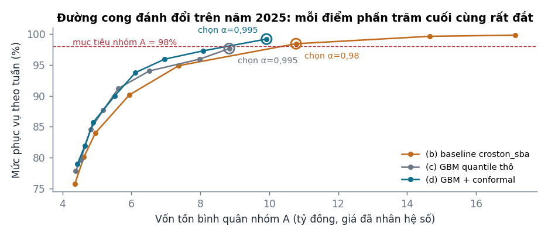
13.4. Kết quả trên năm test 2026
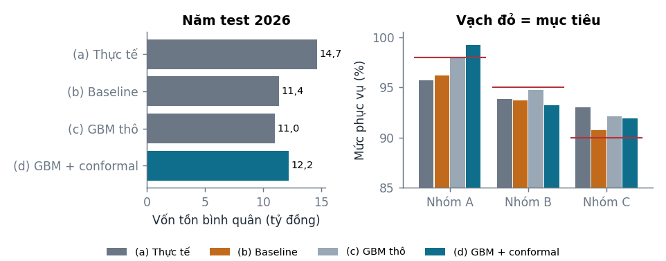
Chính sách đặt hàng theo dự báo quantile (GBM + conformal) giảm 16,5% vốn tồn bình quân so với thực tế (12,2 so với 14,7 tỷ đồng, giá đã nhân hệ số) và nâng mức phục vụ nhóm A từ 95,7% lên 99,2%. Nhóm C đạt mục tiêu (91,9%). Nhóm B đạt 93,2%, thiếu 1,8 điểm so với mục tiêu 95%, vì α của nhóm B được chọn sát biên trên năm 2025. Baseline rẻ hơn 7% nhưng trượt mục tiêu cả nhóm A lẫn B.
Hai bài học. Thứ nhất, phần lớn giá trị đến từ việc có chính sách định lượng: chỉ riêng quantile + mô phỏng với một baseline đơn giản đã giảm 22% vốn tồn. Mô hình tốt hơn chủ yếu giúp đạt mức phục vụ nhóm A với chi phí thấp hơn. Thứ hai, không đổi lựa chọn sau khi nhìn test: chính sách (c) rẻ nhất trên 2026 nhưng đã trượt nhóm A trên 2025. Vòng sau, khi dò α cần đòi biên an toàn, ví dụ mục tiêu cộng 1 điểm.
Chương 14Test một lần
Mỗi lần nhìn kết quả test rồi quay lại sửa mô hình, tập test biến thành tập validation.
14.1. Khóa tập test
if LOCK.exists() and not a.reopen_reason:
print(LOCK.read_text())
raise SystemExit("Tập test đã mở. Muốn mở lại phải ghi --reopen-reason và báo cáo việc này.")
gate_file = C.OUTPUTS / "quality_gate.json"
if not gate_file.exists():
raise SystemExit("Chưa có quality_gate.json. Chạy backtest trước.")
gates = json.loads(gate_file.read_text())
if not all(g["passed"] and g["candidate"] == a.candidate for g in gates.values()):
raise SystemExit(f"{a.candidate} chưa đạt quality gate trên mọi vòng backtest: không được mở test.")Khóa nằm ở audit/test_lock.json, ngoài thư mục kết quả, và được commit. Nhật ký của lab ghi ba lần mở, mỗi lần có lý do:
| Lần | Lý do | Thay đổi |
|---|---|---|
| 1 | Mở lần đầu | Lỗi: α của chính sách đặt hàng bị dò ngay trên năm test |
| 2 | Sửa lỗi dò α trên test | Chỉ phần mô phỏng thay đổi |
| 3 | Sửa bốn lỗi do review độc lập tìm ra: cửa sổ bảo vệ thừa một tuần, cờ hết hàng bỏ sót, rò rỉ nhãn trong CQR, chuỗi ngừng kinh doanh bị cắt sớm | Dữ liệu dựng lại; RMSSE test 0,716 → 0,714; mô phỏng thay đổi lớn |
Ở lần mở thứ ba, lệnh dựng lại pipeline từ đầu còn xóa mất file khóa cũ nằm trong outputs/. Hai bản ghi trước được khôi phục từ nhật ký phiên làm việc và khóa được chuyển sang audit/. Không xóa dấu vết, mà ghi rõ đã mở lại, vì sao, và kết quả nào thay đổi: đó là mục đích của cơ chế khóa.
gbm_dm: RMSSE 0,714 so với 0,772 của Croston-SBA (tốt hơn 7,5%), SPL tốt hơn 11,2%, Bias +0,9%, coverage P90 0,911, P95 0,954. Quality gate ĐẠT cả sáu tiêu chí. Theo nhóm ABC: A −14,2%, B −8,8%, C −3,4%.
Sau khi tập test đã khóa, mô hình chốt được đưa vào vận hành: Chương 15.
Chương 15Triển khai và giám sát
Bốn phần biến mô hình đã nghiệm thu thành hệ thống chạy mỗi sáng thứ Hai: đóng gói, dự báo và đề xuất, dashboard duyệt, giám sát. Code ở thư mục deploy/.
| Phần | Script | Đầu ra |
|---|---|---|
| 1. Đóng gói mô hình | train_final.py | models/registry/<tag>/bundle.joblib, metadata.json, CURRENT |
| 2. Chạy hằng tuần | predict_weekly.py | runs/<thứ Hai>/forecast.parquet, order_proposal.csv, run_log.json |
| 3. Dashboard | dashboard.py (Streamlit) | order_proposal_approved.csv |
| 4. Giám sát | monitor.py | monitor_weekly.csv, alerts.json, monitor.png |
Phần triển khai không có logic mô hình riêng: nó gọi lại đúng features_at, labels_at, mô hình GBM và mô hình tổng nhu cầu của các chương trước, nên thứ chạy hằng tuần giống hệt thứ đã backtest.
15.1. Gói mô hình có phiên bản
train_final.py chỉ đóng gói khi dữ liệu không có lỗi FAIL và gbm_dm đạt quality gate ở cả hai vòng. Gói chứa mô hình dự báo (mean + 4 quantile), mô hình tổng nhu cầu cửa sổ bảo vệ với hiệu chỉnh CQR cho ba mức α đã dò trên 2025, bảng conformal của Croston-SBA cho dự phòng, phân phối tham chiếu để đo trôi dữ liệu, và một model card. Gói production gbm_dm_20261102 nặng 2,8 MB, đóng gói trong 84 giây.
def load_package(tag: str | None = None) -> tuple[dict, dict]:
tag = resolve_tag(tag)
d = REGISTRY / tag
meta = json.loads((d / "metadata.json").read_text())
if file_md5(d / "bundle.joblib") != meta["bundle_md5"]:
raise RuntimeError(f"bundle.joblib của {tag} không khớp md5 trong metadata: gói đã bị sửa hoặc hỏng")
return joblib.load(d / "bundle.joblib"), metadef promote(tag: str, reason: str) -> None:
REGISTRY.mkdir(parents=True, exist_ok=True)
prev = CURRENT.read_text().strip() if CURRENT.exists() else None
CURRENT.write_text(tag)
with open(REGISTRY / "promotions.jsonl", "a") as f:
f.write(json.dumps({"at": datetime.now().isoformat(timespec="seconds"), "from": prev, "to": tag,
"reason": reason}, ensure_ascii=False) + "\n")Mọi gói mới được tạo không kèm --promote, chạy bóng vài tuần, rồi mới ghi vào CURRENT. Quay lui chỉ là ghi lại tên gói cũ.
15.2. Chạy hằng tuần và bảng đề xuất
Với mốc cắt là tuần đầy đủ cuối, predict_weekly.py kiểm tra dữ liệu, từ chối gói học sau mốc cắt, dự báo 1–12 tuần bằng mô hình chính kèm Croston chạy bóng, tính tồn và hàng đang về tại Chủ nhật, mức S theo nhóm ABC, rồi lượng đặt.
def forecast_at(p, o, bundle, force_fallback=False):
"""Dự báo 1–12 tuần tại mốc cắt o; luôn kèm Croston-SBA làm bóng/dự phòng."""
hs = list(range(1, C.HORIZON + 1))
f = features_at(p, o, hs, labels_at(p, o))
f = f[f.active].reset_index(drop=True)
sbc = labels_at(p, o).set_index("unique_id").sbc
pf = B.point_forecasts(p.Y, o, C.HORIZON)[core.FALLBACK_MODEL]
sh = pd.DataFrame({"unique_id": np.repeat(p.ids, C.HORIZON), "origin": o,
"h": np.tile(np.arange(1, C.HORIZON + 1), len(p.ids)), "mean": pf.ravel(),
"model": core.FALLBACK_MODEL})
sh = f[["unique_id", "origin", "h", "scale"]].merge(sh, on=["unique_id", "origin", "h"])
sh["sbc"] = sh.unique_id.map(sbc)
sh = B.apply_conformal(sh, bundle["fallback_table"], C.QUANTILES)
out = f[["unique_id", "origin", "h", "ds", "scale", "n_obs"]].copy()
out[["shadow_mean"] + [f"shadow_{c}" for c in QCOLS]] = sh[["mean"] + QCOLS].to_numpy()
source = "gbm_dm"
try:
if force_fallback:
raise RuntimeError("diễn tập dự phòng (--force-fallback)")
pr = G.predict(bundle["forecast_models"], f, bundle["features"], bundle["quantiles"])
out[["mean"] + QCOLS] = pr[["mean"] + QCOLS].to_numpy()
error = None
except Exception as e: # mô hình chính hỏng -> dùng Croston-SBA, gắn cờ
out[["mean"] + QCOLS] = out[["shadow_mean"] + [f"shadow_{c}" for c in QCOLS]].to_numpy()
source, error = core.FALLBACK_MODEL, repr(e)
young = out.n_obs < 13 # mã mới: mô hình không được huấn luyện cho trường hợp này
out.loc[young, ["mean"] + QCOLS] = out.loc[young, ["shadow_mean"] + [f"shadow_{c}" for c in QCOLS]].to_numpy()
out["model_source"] = np.where(young, f"{core.FALLBACK_MODEL} (mã mới)", source)
return out, f, source, errorHàng đang về tính theo số lượng đặt của PO chưa nhận, vì đó là thứ người mua biết vào sáng thứ Hai; lượng thực nhận (có thể giao thiếu) chỉ biết khi hàng về.
def open_orders_asof(po: pd.DataFrame, ids, umap: pd.Series, date: pd.Timestamp) -> np.ndarray:
"""Hàng đang về: PO thường đã đặt trước `date` mà chưa nhận tại `date`, tính theo số lượng ĐẶT.
Người mua hàng chỉ biết số lượng đặt; số lượng thực nhận (có thể giao thiếu) chỉ biết khi hàng về.
"""
d = pd.Timestamp(date)
o = po[(po.po_type == "THUONG") & (po.order_date <= d) & (po.received_date.isna() | (po.received_date > d))]
s = o.groupby(o.item_code.map(umap)).qty_ordered.sum()
return s.reindex(ids).fillna(0).to_numpy(float)def order_quantity(S, on_hand, on_order, pack, moq, allowed) -> np.ndarray:
"""Lượng đặt = max(S - tồn - hàng đang về, 0), làm tròn lên theo quy cách, tối thiểu MOQ; 0 nếu không được đặt."""
q = np.maximum(np.asarray(S, float) - np.asarray(on_hand, float) - np.asarray(on_order, float), 0)
q = np.where(q > 0, np.maximum(np.ceil(q / pack) * pack, moq), 0)
return np.where(allowed, q, 0).astype(int)OCAM-0041 (nhóm A): tồn 960 + đang về 0 = 960; mức S 3.097 phủ 10 tuần (α 0,995) → đặt 2.140, làm tròn quy cách 10/MOQ 20. CAP-0047 (nhóm C): tồn 9; mức S 0 phủ 2 tuần (α 0,6) → đủ hàng. Lần chạy này có 382 chuỗi, 184 dòng đề xuất, khoảng 14,4 tỷ đồng.
15.3. Dashboard cho người mua
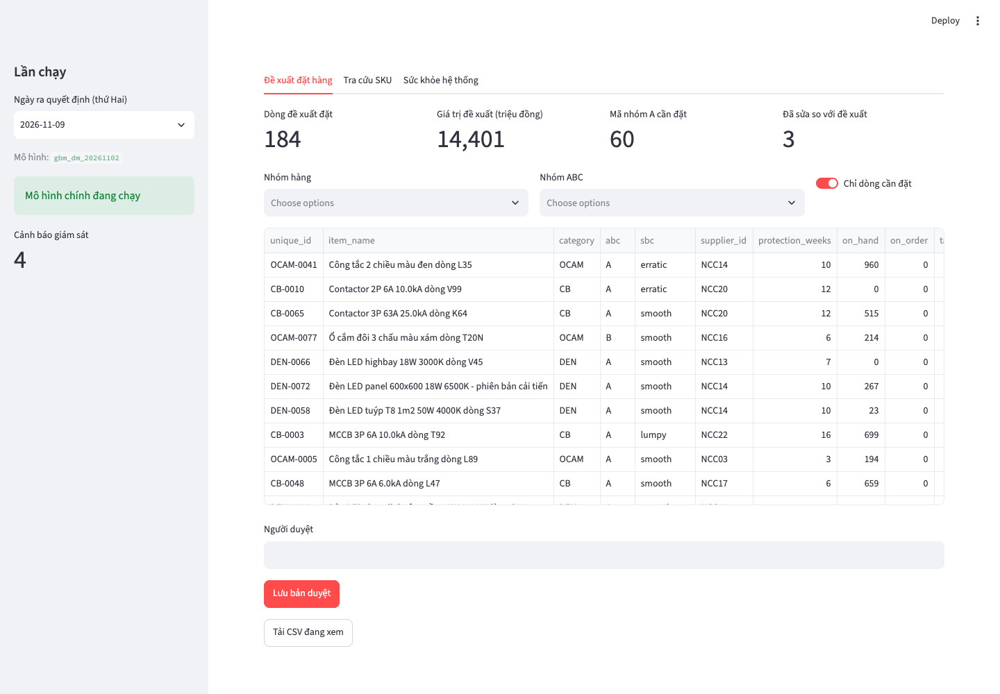
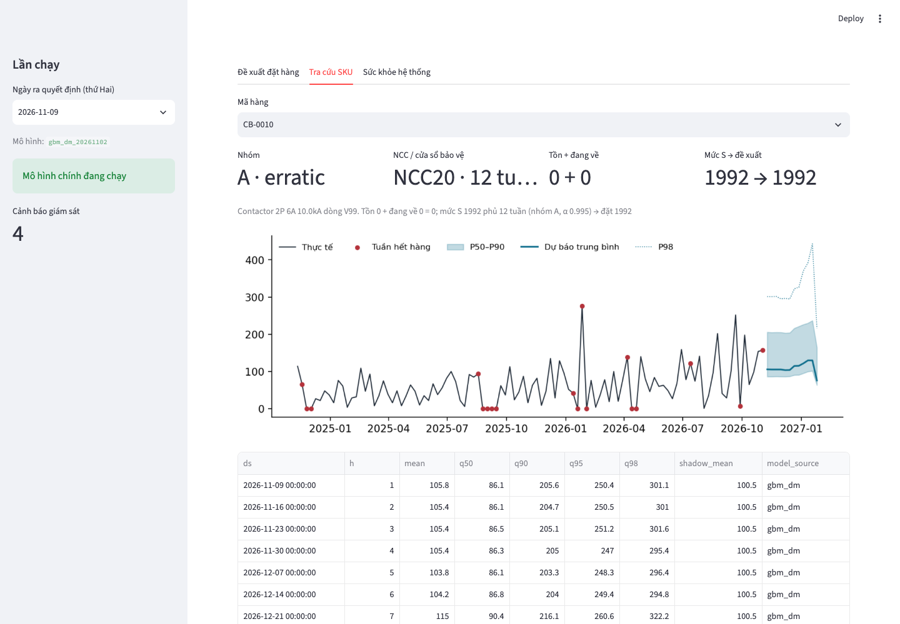
Diễn tập quy trình duyệt tìm ra một lỗi điển hình của giao diện có bộ nhớ đệm: cache khóa theo tên lần chạy nên không thấy bản duyệt mới, và bấm "Lưu" ghi đè mất các dòng người khác đã sửa. Cách sửa là đưa thời điểm sửa file duyệt vào khóa cache:
@st.cache_data
def load_run(run: str, approved_mtime: float):
"""approved_mtime nằm trong khóa cache: ai đó lưu bản duyệt mới thì dashboard đọc lại, không ghi đè bản cũ."""
d = core.RUNS / run
prop = pd.read_csv(d / "order_proposal.csv", dtype={"ghi_chu": str}).fillna({"ghi_chu": ""})
approved = d / "order_proposal_approved.csv"
if approved.exists(): # đã có bản duyệt: nạp lại để người mua làm tiếp
prev = pd.read_csv(approved, dtype={"ghi_chu": str}).fillna({"ghi_chu": ""})
prop = prop.drop(columns=EDITABLE).merge(prev[["unique_id"] + EDITABLE], on="unique_id", how="left")
return prop, pd.read_parquet(d / "forecast.parquet"), json.loads((d / "run_log.json").read_text())15.4. Giám sát và cảnh báo
monitor.py lấy các tuần mục tiêu đã có thực tế của mỗi lần chạy và chấm cả mô hình chính lẫn Croston chạy bóng bằng đúng hàm metrics.evaluate của backtest; thêm trôi dữ liệu (PSI), khối lượng dữ liệu, đột biến giá trị đặt, mức phục vụ thực tế, tỷ lệ đề xuất bị sửa, tuổi mô hình. Cảnh báo CRITICAL làm script thoát mã 2 để lịch chạy tự động gọi người trực.
def psi(ref: dict, x: np.ndarray) -> float:
"""Population Stability Index: Σ (p − q) · ln(p / q). < 0,1 ổn định; 0,1–0,2 cần để ý; > 0,2 trôi đáng kể."""
edges, q = np.array(ref["edges"]), np.array(ref["frac"])
x = x[np.isfinite(x)]
p = np.histogram(np.clip(x, edges[0], edges[-1]), edges)[0] / max(len(x), 1)
p, q = np.clip(p, 1e-4, None), np.clip(q, 1e-4, None)
return float(np.sum((p - q) * np.log(p / q)))| Cảnh báo | Mức | Điều kiện |
|---|---|---|
| MODEL_WORSE_THAN_FALLBACK | CRITICAL | RMSSE mô hình kém Croston bóng 2 lần chạy liên tiếp |
| FALLBACK_ACTIVE | CRITICAL | Lần chạy gần nhất dùng dự phòng |
| COVERAGE_P90, BIAS | WARN | 13 lần chạy: coverage ngoài [0,85; 0,95], |Bias| > 10% |
| DATA_DRIFT | WARN | PSI > 0,2 ở 4 lần chạy liên tiếp (một tuần cao lẻ là mùa vụ) |
| DATA_VOLUME, ORDER_VALUE_SPIKE | WARN | Dòng đơn lệch > 40%; giá trị đặt > 2 lần trung vị |
| SERVICE_A/B/C, EDIT_RATE | WARN | Mức phục vụ 4 tuần dưới mục tiêu; người mua sửa > 30% |
| RETRAIN_DUE | INFO | Gói học đến hơn 13 tuần trước |
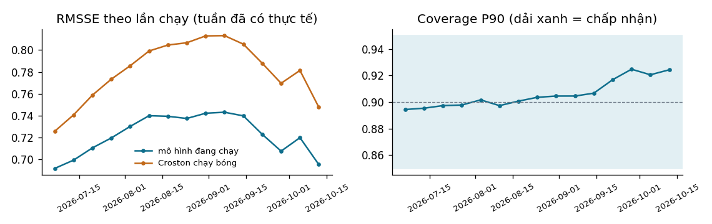
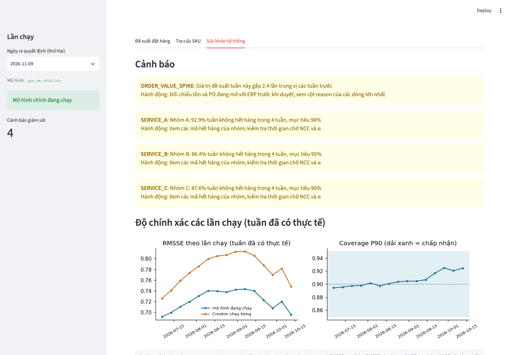
Chạy bóng 18 tuần: RMSSE mô hình 0,600–0,743 so với 0,634–0,813 của Croston; coverage P90 0,894–0,925; Bias −1,4% đến −8,3%. Diễn tập dự phòng: Croston đề xuất 72 dòng, 10,9 tỷ so với 57 dòng, 4,3 tỷ của mô hình chính cùng tuần. Diễn tập duyệt: người mua sửa 3 dòng có ghi lý do, tỷ lệ sửa 1,6%.
Lần chạy production 09/11/2026 có bốn cảnh báo: giá trị đề xuất gấp 2,4 lần bình thường, và mức phục vụ 4 tuần gần nhất dưới mục tiêu ở cả ba nhóm. Truy nguyên: bộ sinh dữ liệu giả lập để người mua hàng ngừng đặt hàng cho NCC thời gian chờ dài trong khoảng 16 tuần cuối, nên tuần cuối chỉ còn 57 PO đang mở thay vì khoảng 350. Hệ thống phản ứng đúng (đề xuất bù đường ống hàng) và cảnh báo buộc người mua đối chiếu với ERP trước khi duyệt. Lỗi chỉ ảnh hưởng 2–3 tháng cuối dữ liệu và làm con số "giảm 16,5% vốn tồn" ở Chương 13 thành ước lượng thận trọng.
15.5. Sổ tay vận hành
| Khi | Làm |
|---|---|
| Dữ liệu tuần mới có FAIL | Không sinh đề xuất; báo người trực dữ liệu; dùng đề xuất tuần trước |
| Monitor thoát mã 2 | Đọc alerts.json; chạy --force-fallback cho tuần tới nếu mô hình kém Croston |
| Đến hạn huấn luyện lại | train_final.py không promote → chạy bóng 4–8 tuần → promote |
| Gói mới chạy kém | Ghi tên gói cũ vào CURRENT, ghi lý do |
| Người mua sửa nhiều | Đọc ghi chú; biến thông tin trong ghi chú thành đặc trưng hoặc quy tắc |
Để chạy trong doanh nghiệp thật còn cần lịch chạy tự động (cron, Airflow), job trích xuất SQL Server có ẩn danh, kho lưu gói mô hình có phân quyền, đăng nhập dashboard, ghi bản duyệt vào ERP qua API, và ít nhất 8 tuần chạy bóng trên dữ liệu thật.
Phụ lục ALệnh chạy và bài tập theo vai trò
cd DataMining/Work/erp-demand-lab
python3 -m venv .venv && source .venv/bin/activate
pip install -r requirements.txt
python3 run_pipeline.py all # seed → quality → clean → verify → mine → backtest → plots → simulate
python3 -m pytest -q tests # 20 test
python3 run_pipeline.py dl # deep learning + Chronos-2 (môn AI), 2 vòng backtest
python3 src/ebook_figures.py # hình của cuốn sách này
python3 src/build_ebook.py # dựng lại sách, code lấy từ mã nguồn
python3 run_pipeline.py deploy-shadow-train deploy-shadow deploy-train deploy-predict monitor
streamlit run deploy/dashboard.py # dashboard duyệt đề xuất, Ctrl+C để tắt| Vai trò | Bài tập | Đáp số |
|---|---|---|
| TN, VT2 | Chạy data_quality.py, viết hướng xử lý cho từng WARN | 15 PASS, 4 WARN, 0 FAIL |
| VT2 | Đổi ngưỡng z (3, 5, 8), vẽ precision–recall của cờ dự án | Ngưỡng 5: P 0,857, R 0,964 |
| VT1 | Viết test chứng minh giá đồng tuần t chưa dùng được trước thứ Sáu tuần đó | Theo mẫu test_external_as_of… |
| VT3 | Chạy luật kết hợp với min_count 10 và 50 | Gốc (30): 19 cặp, precision 0,684 |
| VT4 | Bỏ đặc trưng số tuần đến Tết, đo lại sai số ±2 tuần quanh Tết | Gốc: 0,599 |
| VT5 | Chạy run_pipeline.py dl; thêm decoder LSTM sinh lần lượt 12 tuần và so với đầu ra trực tiếp | CNN 1D 0,766 / 0,756; không mạng nào qua G1 |
| VT6, TN | Chạy triển khai; tự tính lại lượng đặt 3 dòng lớn nhất của order_proposal.csv; giải thích cảnh báo ORDER_VALUE_SPIKE | 184 dòng đề xuất; 4 cảnh báo WARN |
| VT6 | Đổi quy tắc chọn α thành "mục tiêu + 1 điểm" | α nhóm B của (d) thành 0,95 |
Phụ lục BThuật ngữ Việt – Anh
| Tiếng Việt | Tiếng Anh | Nghĩa trong sách |
|---|---|---|
| Mốc cắt | Cutoff, forecast origin | Tuần cuối cùng có dữ liệu khi ra dự báo |
| Backtest cuốn mốc | Rolling-origin evaluation | Đánh giá tại nhiều mốc cắt nối tiếp |
| Rò rỉ dữ liệu | Data leakage, look-ahead bias | Dùng thông tin chưa biết tại mốc cắt |
| Nhu cầu bị che | Censored demand | Lượng bán bị chặn bởi tồn kho |
| Nhu cầu lẻ tẻ, gộp cục | Intermittent, lumpy demand | Phân loại SBC theo ADI và CV² |
| Quantile, khoảng dự báo | Quantile, prediction interval | Giá trị mà nhu cầu không vượt với xác suất q |
| Độ phủ | Coverage | Tỷ lệ thực tế nằm dưới quantile dự báo |
| Hiệu chỉnh conformal | Conformal calibration, CQR | Sửa quantile bằng phần dư trên tập hiệu chỉnh |
| Cửa sổ bảo vệ | Protection interval | Khoảng thời gian mức S phải phủ |
| Mức phục vụ theo chu kỳ | Cycle service level | Tỷ lệ tuần không hết hàng |
| Dừng sớm | Early stopping | Ngừng huấn luyện khi validation loss không còn giảm |
| Đóng băng lớp, tinh chỉnh | Freeze, fine-tune | Giữ nguyên trọng số encoder, chỉ học lại lớp cuối |
| Mô hình nền tảng | Foundation model, zero-shot | Mô hình huấn luyện trước trên nhiều chuỗi, dùng không cần huấn luyện thêm |
| Cổng chất lượng | Quality gate | Tiêu chí nghiệm thu viết trước |
| Hợp đồng dữ liệu | Data contract | Cấu trúc và miền giá trị bắt buộc của bảng |
Phụ lục CTài liệu tham khảo
- Tan, P.-N., Steinbach, M., Kumar, V. Introduction to Data Mining. Pearson.
- Chapman, P. et al. (2000). CRISP-DM 1.0: Step-by-step data mining guide.
- Hyndman, R. J., Athanasopoulos, G. Forecasting: Principles and Practice (3rd ed.). OTexts.
- Hyndman, R. J., Koehler, A. B. (2006). Another look at measures of forecast accuracy. International Journal of Forecasting, 22(4).
- Croston, J. D. (1972). Forecasting and stock control for intermittent demands. Operational Research Quarterly, 23(3).
- Syntetos, A. A., Boylan, J. E., Croston, J. D. (2005). On the categorization of demand patterns. Journal of the Operational Research Society, 56(5).
- Teunter, R. H., Syntetos, A. A., Babai, M. Z. (2011). Intermittent demand: Linking forecasting to inventory obsolescence. European Journal of Operational Research, 214(3).
- Makridakis, S., Spiliotis, E., Assimakopoulos, V. (2022). M5 accuracy competition: Results, findings, and conclusions. International Journal of Forecasting, 38(4).
- Ke, G. et al. (2017). LightGBM: A highly efficient gradient boosting decision tree. NeurIPS.
- Romano, Y., Patterson, E., Candès, E. (2019). Conformalized quantile regression. NeurIPS.
- Hochreiter, S., Schmidhuber, J. (1997). Long short-term memory. Neural Computation, 9(8).
- Chollet, F. (2018). Deep Learning with Python. Manning.
- Ansari, A. F. et al. (2024). Chronos: Learning the language of time series. Transactions on Machine Learning Research.
- Silver, E. A., Pyke, D. F., Thomas, D. J. Inventory and Production Management in Supply Chains (4th ed.). CRC Press.
Mọi con số trong sách đến từ dữ liệu giả lập của lab; chúng minh họa phương pháp và cho đáp số để tự kiểm tra, không phải kết quả của doanh nghiệp thật. Code trong sách được chèn tự động từ mã nguồn bởi src/build_ebook.py.